A holistic approach to writing captivating,
memorable hit songs. With 317 proven commer-
cial techniques and 331 examples.
Written by Friedemann Findeisen
ISBN: 978-90-823913-0-5
Published in 2015 by Albino Publishing
Albino Publishing
Hendrik ter Kuilestraat 140
7547 BE Enschede
Netherlands
Book design by Friedemann Findeisen
© 2015, Friedemann Findeisen. Except as provided by the Copy-
right Act, no part of this publication may be reproduced, stored
in a retrieval system or transmitted in any form or by any means
without the prior written permission of the publisher.
testimonials
“Friedemann strikes completely new paths by throwing music, ar-
rangement, lyrics and production into the storytelling pot. Forget
yesterday’s songwriting and all idols you’re trying to imitate. This
book describes a new, up & coming, not yet conceivable, maybe
not even born generation of songwriters”
Marc David (Kolibeat)
“Wow, I can’t believe someone actually found a holistic approach
to songwriting that explains how arrangement, production, lyrics,
melody, harmony, rhythm, etc. work together in a hit song”
Thomas Muis (Composer)
“Fresh and easy-to-read. Mr. Findeisen makes his case not by
rehashing (often) “dry” theory, but by providing clear visual and
linguistic examples that speak most effectively to 21st Century
songwriters (along with plenty of references to recent hit songs)”
Tom Salisbury (Grammy-Award Winning Arranger)
“[This book] completely changed the way I listen to composi-
tion and analyse arrangements. Friedemann explains his theories
clearly, in-depth and with a great sense of humor. A must-read for
every songwriter and conservatory student”
Frederike Berendsen (Singer/Songwriter)
THE ADDICTION FORMULA iii
“A revelation for songwriters who feel rightly overwhelmed or
wrongly underwhelmed by how well-crafted hit-songs truly are.
[This book] explains the techniques behind the great pop songs
with great humor, clarity and tons of visual and auditory exam-
ples. Expect lots of
“aha!” moments and the understanding that
songwriting is not as difficult as it seems, just hard work. Once
you know the rules, the fun really begins and this book lays them
out in the clearest way possible”
Benjamin Samama (Topline Writer, Berklee Teacher)
“This book reveals the secrets to hit songwriting in a logical and
unique way. While most books give you rules that can always be
broken, this book goes for the root of the problem and shows you
how to write songs on the highest level. This is the new way of
encoding hit songwriting”
Jobassa (Performing Artist)
“Today’s biggest bands and artists all have something in com-
mon and Friedemann unravels this secret in his own, fascinating
way. He combines storytelling in movies with lyric writing and
song build. The analysing goes deep and the tools are useful and
inspiring. Highly recommended.”
Erwin Steijlen (Pink, Shakira)
iv FRIEDEMANN FINDEISEN
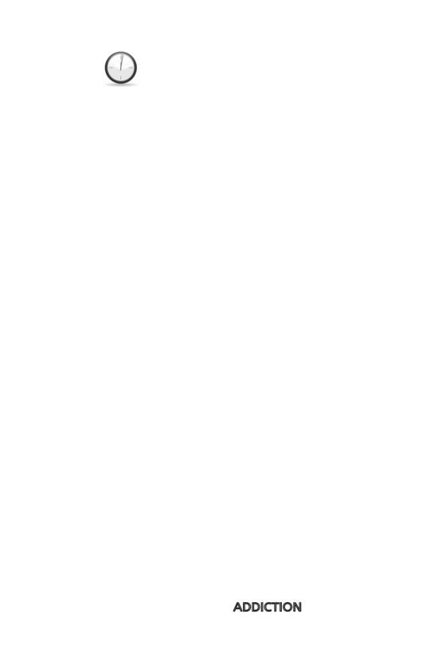
If You Only Have 2 Minutes
Are you in a book store and the owner is really uptight
about reading too long in the same book? Or are you
reading this page online and you just want to know the
basics of the Addiction Formula? Then this page is for
you.
The Addiction Formula is designed to captivate your
audience and guide their attention through your songs.
With the techniques outlined in this book you will be
able to turn any song into an audience magnet that is
extremely compelling to listen to and hard to turn off.
To accomplish this, we will borrow psychological prin-
ciples from addiction (as in drug abuse, binge-watching
Lost or eating Twinkies) to structure our song, set en-
ergy levels and transition between sections.
The three tools that will help us with this are hype
(relative energy), tension (gradual energy) and implied
THE ADDICTION FORMULA v
tension (superimposed energy). Once you understand
these simple tools, driving attention will become sec-
ond nature to you. After a little while, using the for-
mula will be easy and fun.
If you have 5 more minutes, read on…
vi FRIEDEMANN FINDEISEN
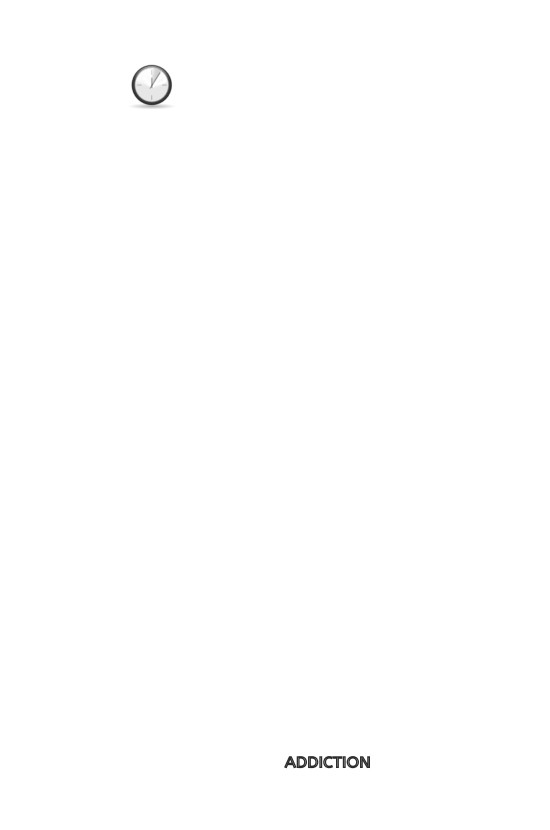
If You Only Have 5 Minutes
It seems the staff of your book store is friendly. Or
you’re really pushing your luck. Either way, let’s get
into a little more detail.
So we’ve already talked about structuring in a compel-
ling way (what I call Lyric-Less Storytelling). In the Ad-
diction Formula, we use energy curves to represent our
story. It visualizes structure, arrangement and many
other things at a glance. You can see such an energy
curve on the next page.
I’m sure you’ve already used this particular structure
(verse, chorus, verse, chorus, bridge, chorus). And if
you haven’t used it, you have heard it at least a couple
thousand times on the radio.
In part 1 of this book, we’ll go into why this and other
structures work better than others and how they trigger
certain things in your brain when you hear them.
THE ADDICTION FORMULA vii
This stuff is gold if you want to know how to capti-
vate an audience at the deepest level. And if that’s not
enough for you, I’ll even teach you four simple steps to
create your own, unique energy curves.
In part 2, we move from framework to practice. These
chapters are all about translating your curve into mu-
sic. We will go into detail as to how you can increase or
decrease the energy and how to build up to certain mo-
ments. This part of the book is similar to an encyclo-
paedia with lists of techniques you can use in any song.
Part 3 then is about putting all you have learned to-
gether. Here, we will go through the 10 steps of the Ad-
diction Formula and see where we can go from there.
We will also do something that no other songwriting
book has ever done before: Give you the tools to cre-
ate your own techniques. This might be the most valu-
able part of this book if you are seeking to sound more
unique and stand out from the crowd.
Naturally, I don’t expect you to believe a single word
I say without proof, so every technique or idea in this
book comes with examples from the billboard charts of
THE ADDICTION FORMULA ix
the past 25 years. We are talking modern songwriting
here - no examples that are older than this allowed!
Do you need to know music theory? While some the-
ory knowledge can help you with this book, it isn’t all
that necessary. We’re writing for non-musicians, not for
music teachers or musicologists. You will notice upon
flicking through this book that I don’t use notation or
any other conventional way of describing music. Am
I saying music theory is outdated? No. But there are
plenty of hit songwriters out there who can’t read mu-
sic and in order to understand the Addiction Formula
you don’t need to either.
If this is where you put the book back onto the store’s
shelf, let me thank you for reading this far. I hope the
few points I could share with you will make a differ-
ence. Good luck!
If however you want to dive in deep and learn about
all of the nuances that make this approach work, read
on.
x FRIEDEMANN FINDEISEN
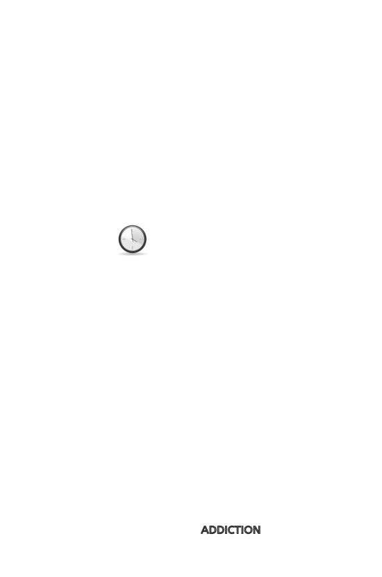
If you have 4 hours…
THE ADDICTION FORMULA xi
Contents
Preface: Story Is Dead, Long Live Story.
xiv
It’s Really Yours: On Making This Book Your B*tch
16
Disclaimer
18
PART 1: ENERGY CURVES
Holistic Songwriting: The Interdependency Problem
21
How To Sound Gefährlich:
The Key To Captivating An Audience
28
Energy: The Governing Principle
37
Setting Hype
39
Using Tension
40
The Perfect Energy Curve: Let’s Go For A Ride
46
Transitions
55
(S)hit Test #1: The Friend Test
61
Hollywood’s Secret Formula:
The Most Popular Form In The World
66
And… Scene! - Let’s Write A Thriller
78
PART 2: ELEMENTS
Introduction To Part 2: Now We’re Talking
93
Arrangement
99
Implied Tension: The Third Kind Of Tension
104
xii
FRIEDEMANN FINDEISEN
Harmony
110
Rhythm
118
Part-Writing
125
1) Vocals
127
2) Guitar
139
3) Bass
146
4) Piano & Synthesisers
149
5) Drums
151
Lyrics
159
Production
182
End Of Part 2
192
PART 3: APPLICATION
Your Own Techniques In 4 Simple Steps
195
(S)hit Test #2: Moving Boreders:
Does your song do its job?
199
The Addiction Formula In 10 Simple Steps
203
Epilogue
216
Thank You!
210
Acknowledgements
211
About The Author
213
Energy Curve Blueprints
215
Toolbox
216
Glossary
217
THE ADDICTION FORMULA xiii
Preface
Story Is Dead, Long Live Story.
As far as I’m concerned, storytelling in music is about
over. Yes, it still pops up every now and then in some
country songs or your latest folk hit, but overall, song-
writers are moving away from telling fully fleshed-out
stories through their songs.
This in turn means one very important aspect of song-
writing just falls by the wayside: dramaturgy. What
storytelling did for centuries (going all the way back
to bards) is provide a reason for listening to the whole
song: If you wanna know what happens to Georgie, you
have to keep listening 1. Every songwriter knows: Give
the audience a good story and they’ll stick around 2.
Now look at the following songs:
Sam Smith - Stay With Me,
Katy Perry - I Kissed A Girl,
1 Rod Stewart - The Killing Of Georgie
2 The Beatles - Eleanor Rigby, Johnny Cash - A Boy Named Sue, The
Police - Don’t Stand So Close To Me, The Temptations - Papa Was A
Rollin’ Stone
xiv FRIEDEMANN FINDEISEN
Rihanna - Umbrella,
Jennifer Lopez - Booty,
Beyoncé Knowles - Drunk In Love (feat. Jay-Z)
Are these songs big storytellers? Do you stick around
because you wanna know more about J-Lo’s butt 1?
Does your life depend on finding out what Katy Perry
has to say in verse 2? No. These songs - as 95% of all
the songs on the radio today - describe moments, emo-
tions, things. Story is dead. Or is it?
With this book I present to you an approach to songwrit-
ing that is all about telling a captivating story - without
actually telling a story. In fact, each song named above
does tell a story the addictive way and could have been
written using the approach.
I’m not trying to reinvent the wheel here. Our goal is
to write compelling, commercial tracks that fit into the
radio format. But as you’ll see, the Addiction Formula
can help you get there much, much faster and with la-
ser precision - over and over again. And best of all: It’s
so deviously simple you can learn it in 4 hours.
1 Ok, bad example.
THE ADDICTION FORMULA xv
it’s really yours.
On Making This Book Your B*tch
In order to get the most out of this book I highly rec-
ommend getting a highlighter, post-its and a pen. High-
light anything that is new to you or helps you in any
way and mark the page with a labeled post-it.
If reading this book gives you an idea of any kind,
whether related to what I have written or not, write it
down immediately. These insights are often way more
valuable than anything I could ever teach you. High-
lighter, post-its, pen. Grab ‘em now!
Secondly, I urge you to listen to at least half of the
musical examples. Reading about a technique is not
enough. You have to hear it in action. Too many song-
writers have made the mistake to think that understand-
ing something is just as good as knowing what it sounds
like.
Do not be one of them.
16 FRIEDEMANN FINDEISEN
I urge you to read this book next to a computer with
youtube or spotify opened up and ready to go 1. I put a
lot of time and effort into finding examples that show
different sides of the same technique, so listen to all of
them even if you “get it” the first time.
Thirdly, if you haven’t already, subscribe to my news-
letter at holistic-songwriting.com. Every week, I share
MASSIVE value, incl. some of my favorite techniques,
like Trading Space and Base Pitches. Do it now!
And one more thing...
Before we get into how the Addiction Formula and
Lyric-Less Storytelling works, make sure you read the
overview on page 211 to get an idea of how the Formu-
la fits into your writing process. You won’t understand
everything quite yet (and that’s fine), but make sure you
understand when to apply the formula to your songs.
1 If you’re listening on youtube, note that some music videos have
special intros different from the album version meaning that some
of the times given in this book will be offset. In this case just try to
find a lyric video - they often use the version from the album.
THE ADDICTION FORMULA
17
Disclaimer
We are primarily concerned with commercial music in
this book. If this contradicts your artistic integrity, let
me say a few words because I used to think very much
like you.
If you want to make music that is completely free from
conventions, pop music is not the place for you. Pop
heavily relies on an element of recognition to help you
relate quicker to a new song. Some songs are more obvi-
ous about it, using similar melodies, grooves or sounds
as other hits while others are more sophisticated with
it. That’s just how it is. However, the pop rules that do
exist still allow you to be immensely creative and origi-
nal.
Think of the top 200 as a party that you can only go
to if you dress up in a smoking. Does that change your
personality or who you are? Of course not.
So what about artistic integrity? Too many times I have
found this term to just mean “ego”. If you are not will-
18 FRIEDEMANN FINDEISEN
ing to play by any rules, don’t be surprised if you are
not invited to the party.
But stay with me, I think once you learn what the rules
are you will realize that they can be used with good
intentions, i.e. musically. And we all agree that there
should never be musical compromise in favor of com-
mercialism.
THE ADDICTION FORMULA
19
PART 1:
ENERGY CURVES
In this part you will learn:
✓✓
What the Addiction Formula can do for your songs
✓✓
What a compelling energy curve looks like
✓✓
How to create your own energy curve from scratch
Holistic Songwriting:
The Interdependency Problem
If you’ve ever tried to teach someone anything about
songwriting you might have realized how hard it is to
teach something if you have to keep all possibilities in
mind. For example, if you tell your student that a cho-
rus needs to be big, he might (correctly) argue that the
chorus of Usher's Climax is in fact tiny.
The difficulty is that every element in a song is interde-
pendent of its surroundings. Examining one element
at a time is like studying an organ in the human body:
take it out of its context and it will stop working.
And this marks the big problem with songwriting:
There is so much stuff to keep in mind. A song needs
to have great melody, harmony, rhythm, lyrics, pro-
duction, arrangement, feeling, needs to be captivating,
memorable and all of that in 3.5 minutes. Every single
one of these elements is interdependent of one anoth-
er. Change one and the rest has to follow suit.
THE ADDICTION FORMULA
21
This typically leads to a very inefficient writing process.
Let’s check it out, see if you recognize this from some-
where.
Friedemann Findeisen proudly presents:
10 Overly Complicated Steps
To Writing A Convoluted Song
1) Start out with one element, let’s say harmony.
2) Add a melody that goes with those chords.
3) Spend hours trying to find lyrics that fit both your
melody and harmony.
4) Write parts for the other instruments that fit every-
thing you have so far.
5) Write the next sections of the song in the exact same
fashion.
6) Try to find musicians that go well with the song and
record them.
7) Attempt to make all your different ideas in your song
fit together through production.
8) Put song on soundcloud.
9) Be disappointed when no one listens to it.
10) Die alone and without anyone ever hearing your
song (your cats don’t count).
22 FRIEDEMANN FINDEISEN
With this approach, there are two ways your music will
end up sounding:
ӹӹ
Your song sounds like a random collection of differ-
ent sections pasted together or
ӹӹ
it all sounds the same if you were too scared to devi-
ate too far from your initial idea.
So your song will either weird out your audience or
bore the crap out of them. These options aren't great
and yet 99% of the songs I hear at conservatories and
amongst to-be professionals suffer from this.
The next step for a songwriter is keeping a structure in
mind when writing. You may know after you've written
your first section that you've written a chorus and that
you need to structure the rest of your song around it.
That's a big step in the right direction - you're starting
to see the forrest for the trees.
However, you're still moving from one element of your
song to the next. You still start out with one element
and adjust all the following elements to the previous
ones. This can only lead to complications because all
THE ADDICTION FORMULA
23
the following elements need to fit every single former
element.
Most people know this problem from writing an en-
tire song and then slapping on some lyrics. This rarely
works out, because they need to work with so many
existing elements now - the melody, the rhythm of the
melody, the mood of the song, the structure, the ar-
rangement, etc. I'm sure you have been in this situation
before and you know it's a living hell.
Imagine working for Mercedes as a manufacturer and
having to adjust to what everyone else is doing all the
time. Sally from marketing comes in and tells you the
motor needs to be bigger because it will sell better. 5
minutes later, Ron, the engineer, tells you it needs to
be smaller to fit into the car. This obviously is a terrible
way of running a company with everyone talking to
everyone.
Yet this is how most songwriters write their songs. Every
new element, be it lyrics, melody or instruments, needs
to fit into whatever's already there, even if they are ask-
ing for entirely different things. Maybe you've written a
24 FRIEDEMANN FINDEISEN
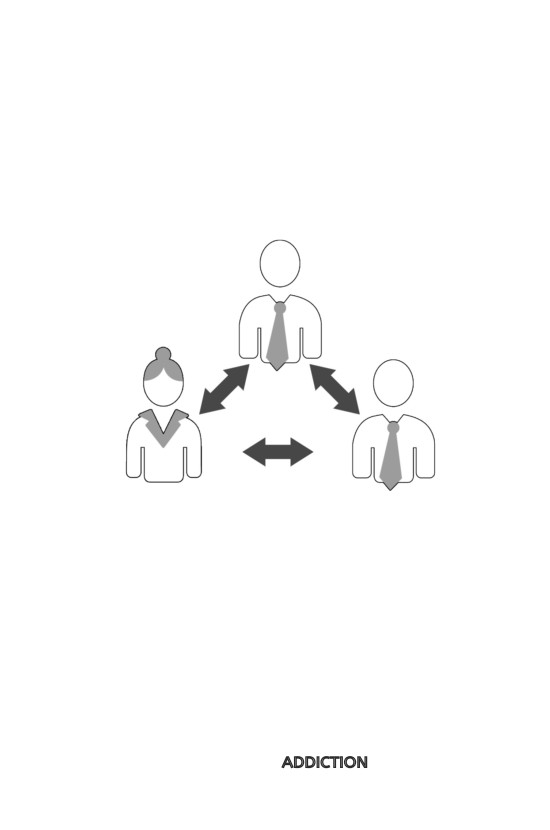
fantastic melody but your lyrics just won't fit its rhythm.
Or you have some great chord progressions but can't
find the right arrangement for them. So what do you
do? You compromise. You write a nonsensical line in
favor of your melody or revert the chords to a standard
power progression. Isn't that a shame.
Let’s get back to Mercedes. Maybe you’ve already fig-
ured out that what really would help this company is
someone in charge, someone who makes the decisions
for everyone. Someone with a vision and a plan.
This changes things. You now know exactly what it is
you need to build - you just ask your boss. If two co-
workers come over to tell you conflicting things, you let
THE ADDICTION FORMULA
25
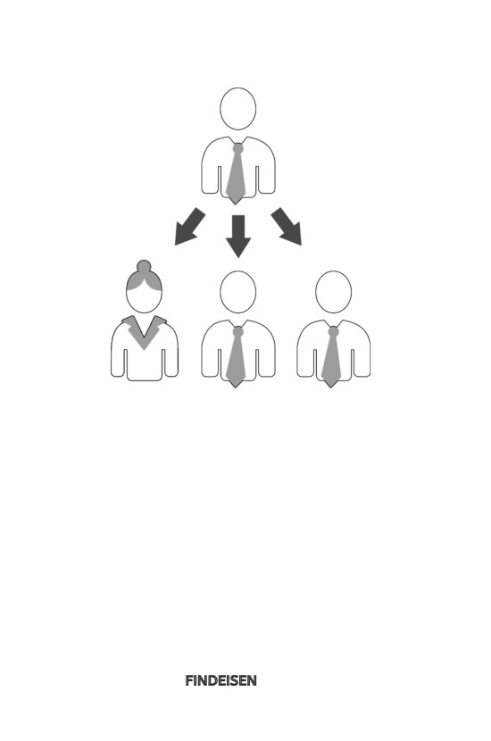
your boss settle the discussion for you. Done.
The same goes for songwriting. There needs to be a
“boss”, a governing principle that guides our writing
process. This way, we don’t need to cross-check every-
thing new we write with what we already have, we just
consult our “boss”, our approach.
This book is about such an approach, which, again, is a
governing principle you can use to write more coherent
songs. It is not a technique or element. Instead, it manag-
es all the elements of your song. This way, you’re taking
26 FRIEDEMANN FINDEISEN
a holistic view of the whole writing process, where you
understand how the different elements work together,
instead of working on one element at a time.
Congratulations, you’ve just been promoted from me-
diator to manager. Now what would be a great gov-
erning principle for your songs? What is important no
matter which genre or style you write in? That’s what
we will get to in the next chapter.
Summary:
✓✓
This book will teach you a governing principle that
guides all the other elements in your song.
THE ADDICTION FORMULA
27
how to Sound Gefährlich:
The Key To Captivating An Audience
When I was studying jazz guitar in Germany, I had a
teacher called Florian Enderle. Imagine Matt Damon
wearing a pair of Groucho Glasses: That’s Florian.
Florian was and still is my favourite teacher because
of his little anecdotes that he would share with us from
time to time. One such an anecdote was about his gui-
tar teacher who had taught him a very valuable lesson:
“You Got To Sound Gefährlich.”
“Gefährlich”
[pronounced g’fair,lish] is German for
“dangerous”, so the phrase translates to “you got to
sound dangerous” 1.
This simple advice has completely changed the way I
think about composition and it is a major component
of the Addiction Formula.
1 Florian’s teacher was American and had somehow picked up this
word from him.
28 FRIEDEMANN FINDEISEN
But what does it mean? It means you want your audi-
ence to feel endangered. You want to grab ‘em by the
throat with your music and create a compelling uni-
verse that pulls them in and is very hard to leave.
This is the key to good songwriting for me, and it is
the ultimate goal of the Addiction Formula: Creating a
fascinating and memorable experience with your songs
that keeps your audience hooked from start to finish.
Of course, you want to do this in such a way that they
don’t notice it. No big swooshes or explosions neces-
sary. In fact, even the sweetest little folk song about
your neighbor’s cacti can sound gefährlich.
This is because the Addiction Formula is merely acting
in the background. It is only audible for the initiated,
but it is there, managing all the different elements of
the song. Once you are aware of it, you will start hear-
ing it in virtually any hit song out there.
This is the power of this formula: It has an enormous
impact on an audience while at the same time being so
subtle that it’s only noticeable to the initiated. So while
THE ADDICTION FORMULA
29
anyone knows that a hit song needs a catchy hook and
a special something-something that makes you wanna
dance, the vast majority of listeners have no idea that
there is another level of “attraction” in songwriting.
So how does it work? Well, what has enslaved you in
the past? Maybe it was the TV series Lost, which you
binge-watched in a week. Or you read a book and you
just couldn’t put it down. Maybe a video game or “fun-
ny cat” videos. Even if it’s a more serious addiction like
alcohol or drugs, what do all of these have in common?
What makes them so enticing?
It’s the principle of gratification & anticipation. You get
something - a big revelation in Lost, a kiss in your book,
a new area in your game, an especially funny cat video,
a high from taking drugs - which gets you into it (grati-
fication), and then you wait for it to happen again (an-
ticipation). So you push through the boring episodes,
read pages of long, boring descriptions in your book,
keep dying over and over again during a difficult sec-
tion in your game, spend hours clicking through un-
funny cat videos and deal with withdrawal symptoms.
30 FRIEDEMANN FINDEISEN
This seems like a terrible to-do list for a day and yet we
do stuff like this all the time. The prospect of getting
something is just too great to stop, even if the process
is tedious.
Secondly, the most addictive things in the world have a
way of forcing you into coming back: Movies, books and
TV series use cliffhangers to create unbearable tension
that can only be resolved by gratification. The longer
you stay off of cigarettes, the more you will physically
feel it. The only way to stop the feeling is to smoke.
Gold diggers keep digging because in their mind their
chances of finding gold go up the deeper they get.
This is all really fascinating stuff because the psycho-
logical principles that form the basis of all these addic-
tions can also be used to make a listener addicted to
your songs.
Imagine a song that subconsciously makes you want
to listen. A song that hooks you, takes you to another
place and keeps you there. A song you wanna play on
repeat all day. This is the kind of song we want to write
with this book. We are not so much interested in hooks,
THE ADDICTION FORMULA
31
groove or lyrics but rather how to arrange them so they
have the most impact.
So if we want to utilize this concept of anticipation
and gratification for songwriting, there are three things
we need to accomplish:
✓✓
Make the gratification parts increasingly satisfying
to hook the audience and keep them coming back
(these will typically be our choruses),
✓✓
Keep the periods of anticipation (or verses) interest-
ing enough so we don’t bore our audiences, and
✓✓
Find the perfect moments to switch between antici-
pation & gratification - if too much time passes, peo-
ple will get bored and zone out; switch too quickly,
and they will get confused.
Lucky for us, these points have been well-researched
for over hundreds of years in the art of storytelling. A
great story distributes its big moments well through-
out its duration. Fact is: There is nothing more enticing
than a good story.
Marketers - those people that really know how to get
inside your head - use them all the time. Instead of
32 FRIEDEMANN FINDEISEN
telling you how great their product is, they start telling
you a story 1.
Once you started, you can not go back. Be honest:
Would you watch every single episode of Breaking Bad
and then stop right before the last episode? Of course
not. The Harry Potter book series wouldn’t have been
as successful as it was if people didn’t want to know
how the story continues 2. It only makes sense to use the
principles that make a great story work and use them to
write more captivating songs.
Be aware that this is not just another book on writing
more story-driven lyrics. Yes, we will get to that, but for
the most part I want to talk about how you can tell a
story just with your music. You can use this approach
even if you only write instrumental tracks. This is why I
refer to this idea as Lyric-Less Storytelling 3. Our story then
acts as a governing principle that is woven throughout
1 Godin, S. - All Marketers Are Liars (Portfolio Trade, 2012)
2 Which really means they want their moments of gratification:
The first kiss, succeeding at school, triumphing over evil. The rest is
merely anticipation.
3 Meaning it doesn’t need lyrics to work.
THE ADDICTION FORMULA
33
every element of the song.
Note: Lyric-Less Storytelling is really only one of three
factors that make a hit song (the others being hook and
groove 1). However, it is the most logical of the three and
therefore the easiest to learn. And even more impor-
tantly: Learning this approach will give you a huge ad-
vantage in the business because no one knows about it.
Trust me on this one: Everyone knows about hook and
groove. My dentist can tell you that. It doesn’t take a lot
to figure this out and it only takes a little luck to write
a good hook or groove. I’m sure that you have already
written a couple that could be a huge hit. The hard
truth is that they are worthless if they’re not presented
right.
With this book I want to teach you how to place and
introduce your hooks and grooves correctly so you get
the most out of them and write songs that truly con-
nect with people. So here is an overview about the
things you are going to learn in the following pages of
this book:
1 You can find programs on these and many other subjects at
holistic-songwriting.com
34 FRIEDEMANN FINDEISEN
First, we will look at how gratification and anticipa-
tion translate to music in order to really understand
how we can practically force our audience to listen to
us. We will go into great detail how to design an energy
curve for your songs, which is a fantastic visual way of
expressing the gratification/anticipation interplay. The
question we will be asking in this part will be: “What is
our story?”
In part 2 of this book, we will then go through each ele-
ment of a song (such as arrangement, chords, produc-
tion, etc.) and see how we can adapt them to our giv-
en energy curve. That means techniques, techniques,
techniques. So we are concerned with how to tell our
story.
And finally, in part 3, we will start with a chapter on
creating your own techniques (and as far as I know, this
is the only songwriting book in the world that does that!),
followed by a 10-step guide to writing a song with the
Addiction Formula. The question is: “How do we go
from telling stories to becoming a storyteller?”
THE ADDICTION FORMULA
35
I am aware that you will probably want to skip over to
part 2 immediately. Don’t. This book follows a certain
syntax which is designed to get you from where you are
to mastery. In order to understand the techniques of
part 2 properly, you first have to understand why and
when to use them.
Summary:
✓✓
Addiction has two components: Gratification (getting
something that hooks you) and Anticipation (waiting
for more Gratification).
✓✓
The Addiction Formula borrows heavily from story-
telling to hook the listener and keep them invested.
This happens on another level than merely singing
about a story, which is why I refer to it as Lyric-Less
Storytelling.
✓✓
Lyric-Less Storytelling is only one of the three pil-
lars of a hit song. The other two are Groove and Hook.
36 FRIEDEMANN FINDEISEN
Energy:
The Governing Principle
You may have heard the saying “music is universal”.
While I do not believe that to be true 1, there is one ele-
ment all popular styles do seem to have in common.
This element is distribution of energy.
Don’t worry, I’m not gonna go all woo-woo on you and
tell you that your couch should face your fireplace or
that the stars need to align for you to write a hit song.
What I mean is how the energy level of a song rises and
falls.
The moments of highest energy (typically choruses) we
already know as gratification. Moments of lower en-
ergy (verses) we know as anticipation.
As a professional songwriter, you have to be able to con-
trol energy with ease and precision. You have to know
when to increase or decrease it and you know just how
much and how to do it.
1 I remember my grandma calling Bryan Adams “just noise”.
THE ADDICTION FORMULA
37
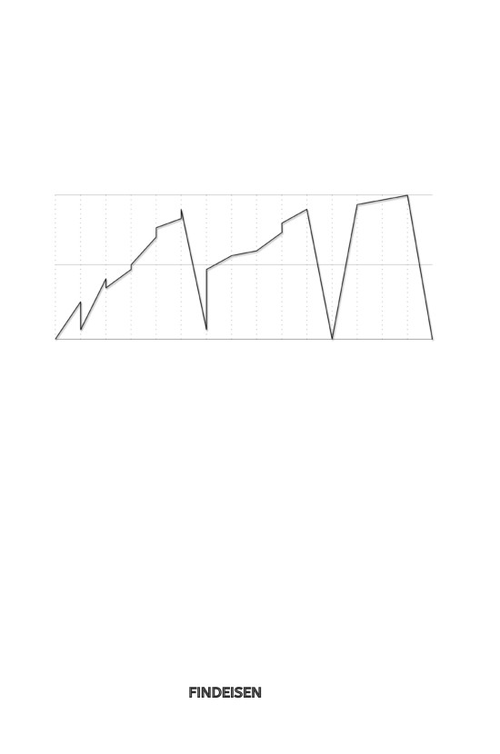
The easiest and most effective way to visualize energy
is by using the energy curve model. This simple tool
will help you tremendously when writing songs. For
example, here is the energy curve for Clean Bandit’s
Rather Be (feat. Jess Glynne):
This curve shows you how the energy is distributed
throughout the song. You can tell at a glance that the
song is most intense during the last hook and that its
lowest point of energy is during the intro and the pri-
mary bridge. So far, so good. Let’s take a look at the
elements it consists of.
Most people argue that energy is made up of tension
and release. Unfortunately, these terms do not make
much sense to me anymore in this day and age. While
they might help analyzing Stravinsky, they seem a lit-
tle unfitting to describe everything that is going on in a
38 FRIEDEMANN FINDEISEN
song of the 21st century. So let’s fine-tune the terms to
reflect a more modern approach to songwriting:
„Tension“ is fine and we will use the term in this book,
although I have a couple of adjustments to make to the
definition which we will get to.
The word „Release“ is problematic: It implies letting
your audience drift away in their thoughts. This is not
the goal of the Addiction Formula, where we want to
keep the listener closely connected to the song.
Instead, I suggest using the words „tension“ & „hype“.
Setting
HYPE
„Hype“ describes a relative energy level. It can only be
altered abruptly, not gradually: It usually jolts up or
down every four or eight bars. Typically, it’s the highest
in the chorus and the lowest in the intro. If your song
was a car, hype would be your gears.
THE ADDICTION FORMULA
39
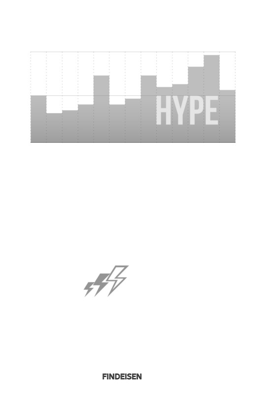
And this is what hype looks like in an energy curve:
The elements that have the biggest influence on hype
are:
✓✓
Arrangement (e.g. more instruments equals higher
hype)
✓✓
Part-Writing (e.g. an instrument played loud is high-
er in hype)
✓✓
Rhythm (e.g. sections with few notes are low in hype)
using
tension
If there was no tension, hype and energy would be the
same thing. However, when we are in a part of the song
with low hype, we still want our audience to know that
this is only temporary and that we will get bigger soon.
40 FRIEDEMANN FINDEISEN
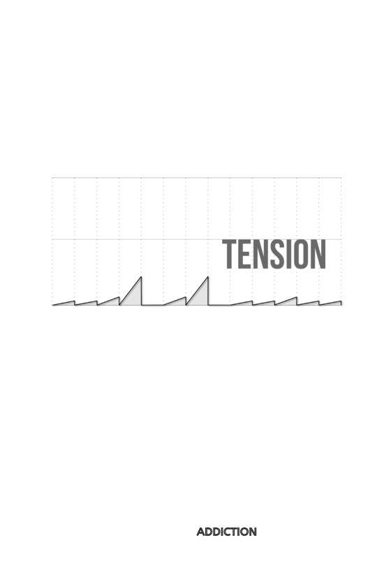
By increasing tension we let them know that we are ap-
proaching a moment of gratification. Tension is always
gradual. If hype was your gears, this would be your gas
pedal.
Here is what tension looks like in an energy curve:
The elements that have the biggest influence on ten-
sion are:
✓✓
Harmony (e.g. ending on a V-chord)
✓✓
Part-Writing (e.g. slowly opening up a hi hat)
✓✓
Rhythm (e.g. increasing the number of notes played)
✓✓
Production (e.g. slowly opening up a filter)
THE ADDICTION FORMULA
41
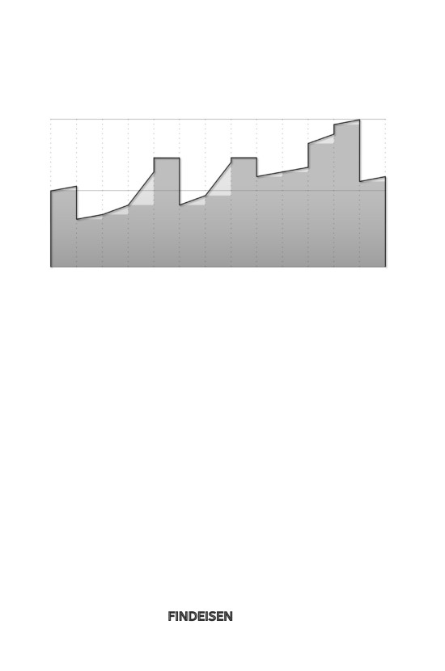
To get the finished energy curve, simply add tension to
hype. This will create a curve as shown here:
Note: There is a third, more complex element that de-
termines your energy curve which we will get to in part
II of this book. For now, I want you to focus on hype
and tension. Make sure you really understand these be-
fore you read on, as we will get back to them time and
time again in this book.
In future chapters, we won’t be coloring in the hype
levels anymore. This will force you to learn to see it in
your mind when you look at an energy curve. I want
you to get to a point where you can tell what is going
on in a section at a quick glance.
42 FRIEDEMANN FINDEISEN
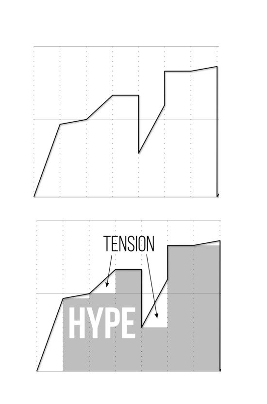
So in other words, when you see this energy curve:
I want you to see this in your mind instead:
And there you have it: Your governing principle, your
boss. This curve will control all the elements of your
song. The quality of arrangement, harmony, rhythm,
part-writing, lyrics and production all depend on get-
ting this curve just right.
If your audience could draw your energy curve just
from listening to your track you’ve done a good job. If
the energy curve is an effective one to begin with (i.e.
it follows the rules of addiction), you might even have
a hit on your hands. In the next chapter, we will talk
about how to create your own energy curve so you can
start experimenting.
A Quick Note On Levels.
All the values described above - energy, hype and ten-
sion - are relative. Looking at them will give you no clue
about what kind of song you are hearing - it could be
Celine Dion or Motörhead. The graphs are drawn
to fit the song‘s most extreme energy levels. This also
means that the values also can not tell you how dynam-
ic your song is: The difference between minimum and
44 FRIEDEMANN FINDEISEN
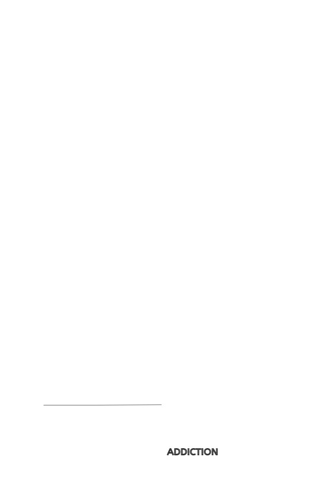
maximum energy can range from barely noticeable 1 to
dramatic 2.
SUMMARY:
✓✓
Energy is made up of Tension and Hype.
✓✓
Hype is static and changes abruptly with each sec-
tion of a song.
✓✓
Tension is dynamic and changes gradually. It is used
to smooth out the blocky hype curve.
1 Robin Thicke - Blurred Lines (feat. T.I. & Pharrell)
2 Miley Cyrus - Wrecking Ball
THE ADDICTION FORMULA
45
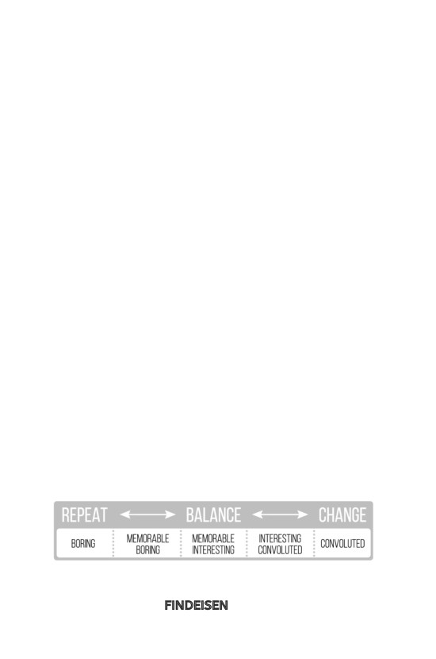
The Perfect Energy Curve
Let’s Go For A Ride
In this chapter, we will talk about how you can design
your own energy curve. I will give you the do’s & don’ts
and a step by step guide to creating your curve.
Step 1: Energy Peaks.
First, decide for a number of energy peaks. 3 is always
a good start. It has its roots in the 3 movements of the
sonata form and is by far the most popular. 2 or 4 is
also possible. Note: These numbers don’t count repeti-
tions, so if the last chorus is repeated, it doesn’t change
the fact that it is still ONE energy peak.
Step 2: Placement.
Next, you have to decide where to put the energy peaks
and troughs. What it really comes down to is balancing
repetition and change:
46 FRIEDEMANN FINDEISEN
Here are some examples: If you have 3 energy peaks,
you could go for Chorus - Verse - Chorus - Verse -
Chorus (not counting intros, pre-choruses, interludes,
etc) 1 or the much more typical Verse - Chorus - Verse
- Chorus - Prim. Bridge - Chorus 2. 2 energy peaks, go
for Verse - Chorus - Verse - Chorus 3. With 4 choruses,
you might want to start out your song with a chorus 4 or
you simply add another bridge: Verse - Chorus - Verse
- Chorus - Prim. Bridge - Chorus - Prim. Bridge - Cho-
rus 5.
If you want to build a curve from scratch, here are 3
tips to help you get creative:
1) End big. You probably want a nice climax at the end
of your song, so putting a chorus there is usually a good
decision. However, ending on a bridge-like section can
also be very effective if you want to suggest an open
1 Linkin Park - Crawling
2 Clean Bandit - Rather Be (feat. Jesse Glynne), Sam Smith - Stay With Me
3 Mr. Probz - Waves
4 Pink - Get This Party Started, Eminem - The Monster, Iggy Azalea -
Change Your Life (feat. T.I.)
5 Pharrell Williams - Happy
THE ADDICTION FORMULA
47
ending 1. This is a pretty mean way of ending a song,
because you’re not giving your audience the gratifica-
tion they want, but it also just might be the reason that
they hit that replay button.
2) Up, Up, Up. One of the biggest problems I see many
songwriters struggle with is writing a good second verse.
This is due to the fact that many writers forget the sim-
ple fact that anything too predictable is boring. Think
back to your latest addiction - for me it was watching
Bob Ross’ Joy of Painting. I was really into it when I
started. I learned a lot. I had a great time and couldn’t
get enough of it. But after a while I kept seeing the
same techniques over and over again and my excite-
ment faded. Each episode felt the same.
This is equally true in music: Repeat and you will lose your
audience. Make sure you give your song direction by
changing small things here and there, preferably get-
ting bigger as the song progresses. This is especially im-
portant when writing the second verse. Make sure you
don’t just repeat verse 1. This is one of the most com-
1 Justin Timberlake - What Goes Around, Seether - Eyes Of The Devil,
Deftones - Passenger (feat. Maynard James Keenan)
48 FRIEDEMANN FINDEISEN
mon mistakes songwriters make. You got your high-
lighter, here’s something to highlight:
ӹӹ
Bad technique (Same hype level as first verse):
“…And we’re back to this again.”
ӹӹ
Good technique (Higher hype level than first verse):
“But wait, there’s more!”
ӹӹ
Great technique (Higher hype level & tension):
“Aaaaaand-”
So make sure that the overall energy level throughout
your song keeps going up (the only exception to this
is using Implied Tension, which we will cover later). The
most gratifying songs are those that put their biggest
moment at the end, with the rest of the song building
up to it.
3) The Golden Mean or: The 1-2-3 Rule. Following this ra-
tio when structuring your song usually leads to pleas-
ing results. Some christians see this number (a little less
than 2/3) as proof of an intelligent designer, which has
also led to the name Divine Proportion.
And indeed, there are countless examples to be found
THE ADDICTION FORMULA
49
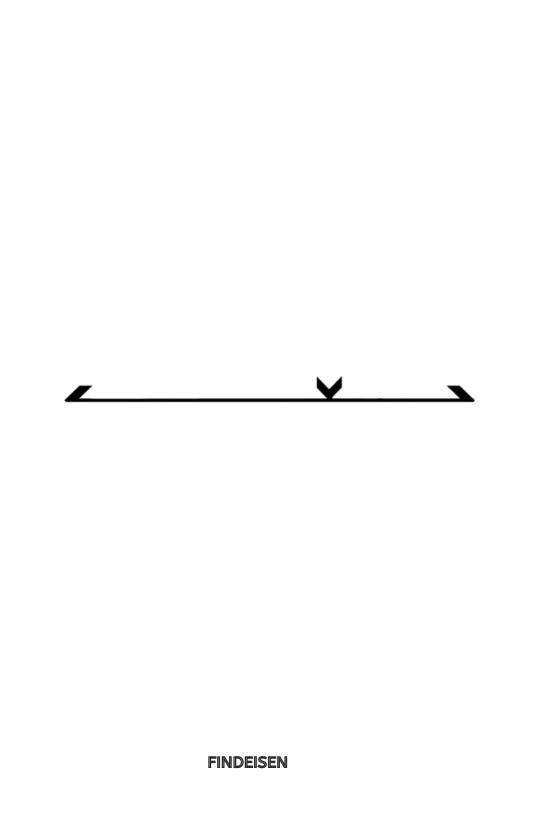
in nature for this ratio, such as the human heart beat,
the amount of petals on pine cones, flower petals, seed
heads, even the human face, DNA molecules and spiral
galaxies.
Whether woo-woo or not, the ratio has found its way
into aesthetics. The Pantheon in Rome is designed
following the proportion, just like the Mona Lisa, the
statue of David, the logos for Apple, Toyota, Pepsi,
etc. The golden mean has become a representative for
beauty.
We can find the ratio in music as well. For example, the
form of Debussy’s La Mer corresponds exactly to the
golden mean, as do most of the works by Béla Bartók.
There is much discussion about this phenomenon as
there is no evidence that any of the composers con-
sciously sought out to use the ratio in their composi-
tions, but whether they did or not, the ratio is there.
I don’t expect you to believe this whole divine propor-
tion story (although it is a fascinating topic, don’t you
think?), so here is a more psychological way of thinking
50 FRIEDEMANN FINDEISEN
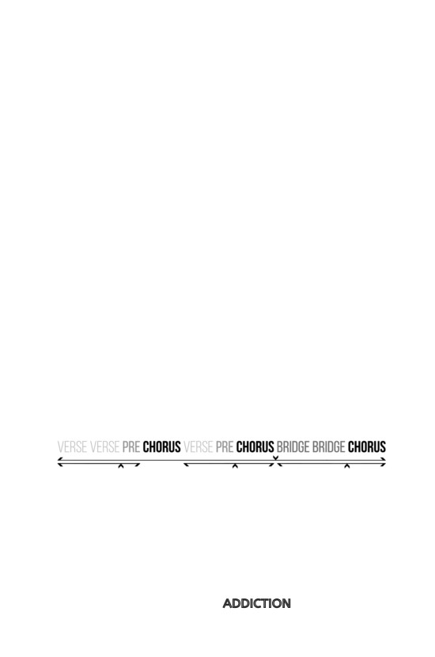
about it:
Have you ever heard about the “rule of three”? It says
that all good things come in threes. By repeating something
you create the expectation of a pattern. The audience
is conditioned to believe that they will hear the same
thing over and over again.
But instead, you surprise them with a completely new
situation. It’s exactly the same kind of principle that
makes all those jokes work:
A Priest and a Rabbi walk into a bar; the Minister ducked.
You pretend to set up a pattern and then break with it.
So let’s look at today’s songwriting and see how the
golden mean is represented in standard song form:
As you can see, there seems to be an unwritten rule
about how many times you can repeat a section before
something new has to happen. For you this just means
that if you’re making up your own energy curve, build
THE ADDICTION FORMULA
51
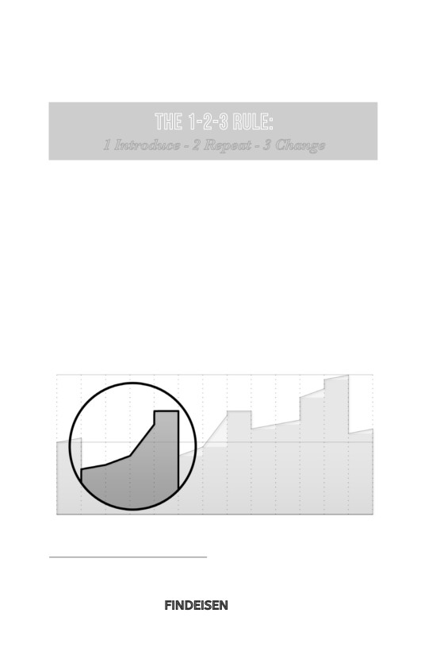
in this 1-2-3 rule as much as you can as it strikes a per-
fect balance between repetition and change 1:
The 1-2-3 Rule:
1 Introduce - 2 Repeat - 3 Change
Step 3: Smooth Out The Build-Ups.
This is the step that most people are not aware of but
it is absolutely crucial for writing a great song. It has to
do with anticipation: If we are not looking forward to
the chorus musically, then why would our audience?
So for this, we will zoom in a little on our energy curve
and just look at one build up from an energy trough to
a peak:
1 You might also know it from blues form.
52 FRIEDEMANN FINDEISEN
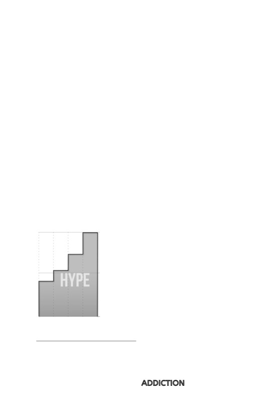
This step is about slowly building up the energy to the
next chorus. Note this common mistake: It doesn’t
matter if you write something different, if your energy
levels don’t change, your audience will get bored very
quickly.
There are three ways to increase anticipation:
ӹӹ
By increasing the hype levels every 4 or 8 bars,
ӹӹ
By using tension or
ӹӹ
By combining the two.
Let’s see what this looks like:
1) Increase Of Hype Levels 1
This is the most basic way of creating anticipation.
Since the energy is going up and up
and up, we get a feeling of direction
towards the next energy peak rather
than remaining where we are. Using
only hype to create anticipation can
sound a little jumpy because there’s
nothing that leads into the following
4 or 8 bars so it isn’t widely used. However, in the right
1 Serj Tankian - The Unthinking Majority (notice the abrupt jumps in hype
every 4 bars from 0:32 onwards).
THE ADDICTION FORMULA
53
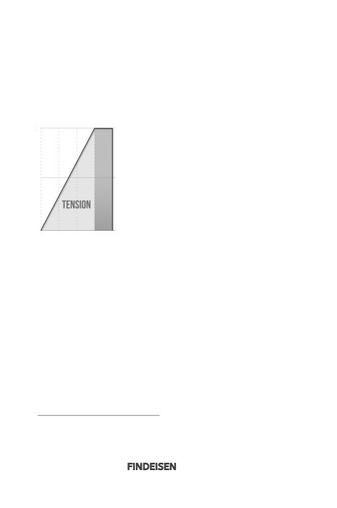
context, it can be used creatively to create a chaotic or
surprising effect.
2) Using Tension 1
A much smoother way of leading up to an energy peak
is using tension. This is the inferior
method of reaching a peak because
it has more direction than just using
hype levels. This technique makes
your energy peak stand out much
more by introducing a certain aura
of mystery that the others don’t
have. However, in the real world there are not a lot of
songs using only tension to reach an energy peak.
So it is possible to use hype and tension individually.
However, it is much more common to combine the
two, which we will look at next.
1 Katy Perry - Firework (build-up at 0:39 - 1:10). There is a slight in-
crease of hype at 0:55, but most of the energy curve is determined by tension.
54 FRIEDEMANN FINDEISEN
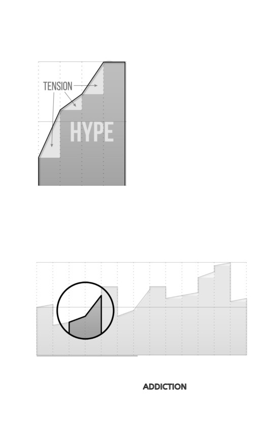
3) Combining Hype & Tension 1
This is the most commonly used type of raising the
energy level over a period
of multiple sections. It has
a great sense of direction,
is straight-forward and con-
nects with your audience big
time. Knowing how to con-
trol both hype and tension
therefore is key to writing com-
mercially successful songs.
Step 4: Smooth Out The Transitions.
Now that we’ve looked at an entire build-up, let’s zoom
in even more and look at how the energy level can
change from one section to the next.
1 Sia - Chandelier (build-up at 1:40 - 2:03)
THE ADDICTION FORMULA
55
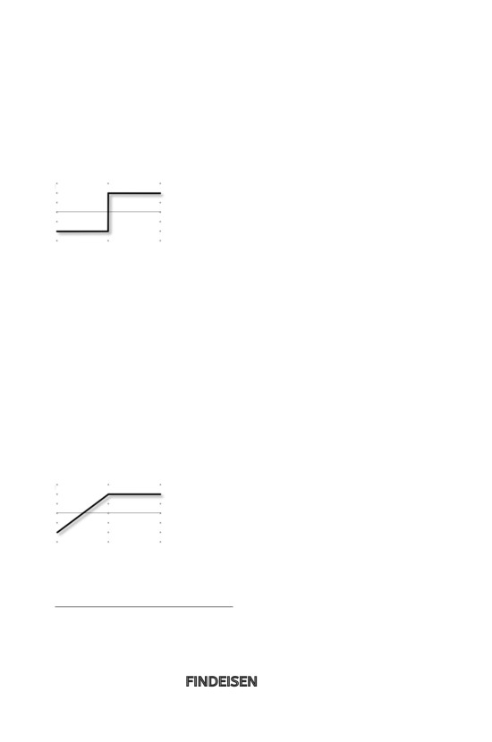
Want to practice your newly-learned skills? See if you
can guess the definitions just from looking at the pic-
tures. If you can’t, go back and review hype & tension.
1) Jump 1
Definition: Increasing hype step-wise.
Best Case Scenario: Unexpected, in-
your-face.
Worst Case Scenario: Chaotic, confusing, show-offy, irri-
tating (“Shhhh, the neighbors!”), draws attention to the
arrangement.
Notes: This is a move that is often seen when going from
verse to verse cont. or from prim. bridge to prim. bridge
cont. It’s the easiest of all transitions to use and when
used subtly it is a great addition to your set of tools.
2) Smooth 2
Definition: Using hype & tension to in-
crease energy.
Best Case Scenario: Exciting, anticipat-
ing, beautiful, compelling, interesting.
Worst Case Scenario: Predictable.
1 The Black Eyed Peas - I Gotta Feeling (jumping transition at 1:00)
2 Adele - Set Fire To The Rain (build-up 0:55 to 1:00)
56 FRIEDEMANN FINDEISEN
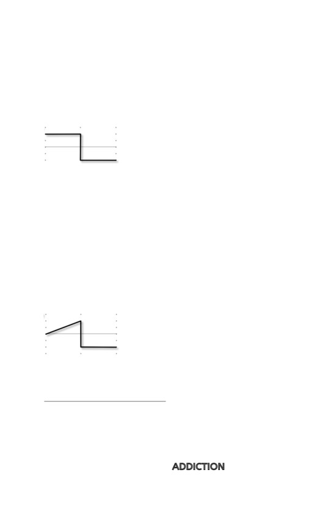
Notes: This is the most popular transition in hit songs.
It has a great sense of direction and works in almost
every situation.
3) Drop 1
Definition: Decreasing hype in steps.
Best Case Scenario: Fascinating, sur-
prising, suspenseful.
Worst Case Scenario: Disappointing, confusing, boring.
Notes: This is the typical transition from chorus back to
verse. Making this move work can be tricky, because
you can easily lose some listeners with it. Using tension
or implied tension (which we will get to in part 2) right
after a drop will usually save your ass.
4) Surprise 2
Definition: Building tension, then drop-
ping to a lower hype level.
Best Case Scenario: Very emotional,
gripping, exciting, brutal, intense.
Worst Case Scenario: Disappointing, confusing, boring.
1 Rihanna - Disturbia (transition at 1:19)
2 Usher - Climax (transition at 1:14), Katy Perry - Dark Horse (feat.
Juicy J., transition at 1:17)
THE ADDICTION FORMULA
57
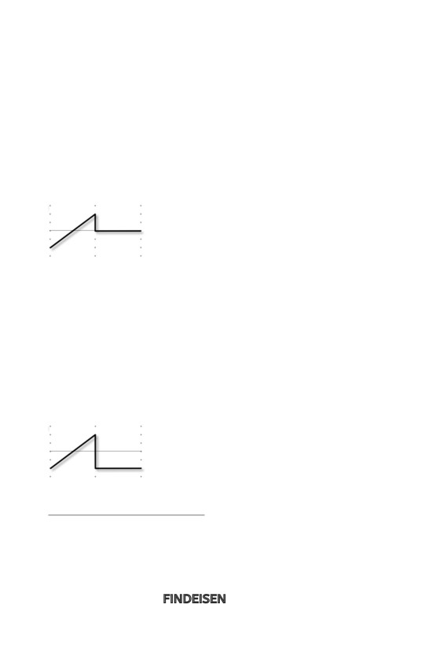
Notes: This is more of an effect, which can be very use-
ful when transitioning from chorus to verse or prim.
bridge. It feels like you are sucking the air out of the
room. Note that you’re running into the same prob-
lems as with a regular Drop.
5) Overshoot 1
Definition: Building more tension than
necessary to reach a higher hype lev-
el in the next section.
Best Case Scenario: Implying underlying turmoil
Worst Case Scenario: Disappointing, confusing, boring.
Notes: Don’t ever use it. Pretending to go somewhere
and then not doing it is effectively telling your listener
that they’ve waited all this time for nothing.
6) False Promise 2
Definition: Building tension but com-
ing back to the same hype level.
Best Case Scenario: -
Worst Case Scenario: Very disappointing, boring, confus-
1 Mark Ronson - Uptown Funk (feat. Bruno Mars, transition at 1:06)
2 Usher - Climax (transition at 1:14), Refused - New Noise (transition at
0:47)
58 FRIEDEMANN FINDEISEN
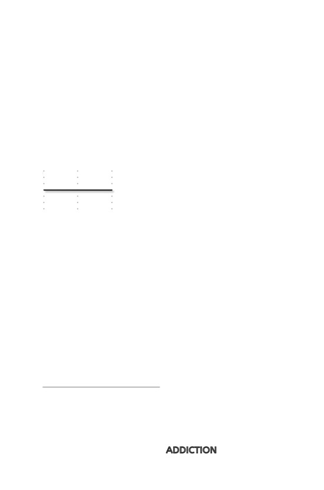
ing, draws attention to the arrangement.
Notes: Even more dangerous than overshooting. Use at
extreme caution or you will burn yourself ! Always fol-
low by using implied tension. And don’t wait too long
with your moment of gratification or you will piss off
your audience.
7) Flatline 1
Definition: Keeping the hype level un-
changed.
Best Case Scenario: -
Worst Case Scenario: Your audience dies of boredom (or
turns off your song).
Notes: This is also a tricky one. If you have something
really special that will keep your audience listening one
way or another (such as implied tension, a fantastic vo-
cal performance or an especially groovy drum beat),
this might work, but there still is no reason not to go up
(unless you have a ballad and don’t want it to be too
busy). When in doubt, always go up.
1 Taylor Swift - Shake It Off (transition at 0:17), Katy Perry - Hot N
Cold (transition at 0:18). Note that both of these happen in the mid-
dle of the first verse.
THE ADDICTION FORMULA
59
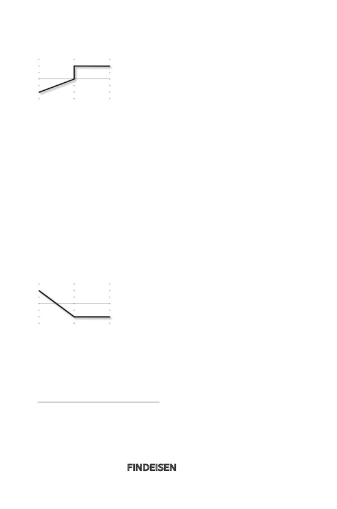
8) Lift 1
Definition: Building less tension than
necessary to transition to a higher
hype level
Best Case Scenario: Great direction, moving, huge.
Worst Case Scenario: Chaotic, confusing, show-offy, irri-
tating, draws attention to the arrangement.
Notes: If you like writing big, impressive choruses, then
from now on this is your go-to move for transitioning
into them. It packs more of a punch than a smooth
transition, clearly establishes the chorus and has great
direction.
9) Negative Tension 2
Definition: Gradually decreasing the
energy to reach a lower hype level.
Best Case Scenario: Smooth, beautiful
Worst Case Scenario: Confusion, disorientation.
Notes: I’m listing this transition merely for completion’s
sake here as it isn’t widely used. Negative tension can
be achieved by using downlifters, certain kinds of drum
1 Miley Cyrus - Wrecking Ball (transition at 0:41)
2 Taylor Swift - We Are Never Ever Getting Back Together (transition at
1:05)
60 FRIEDEMANN FINDEISEN
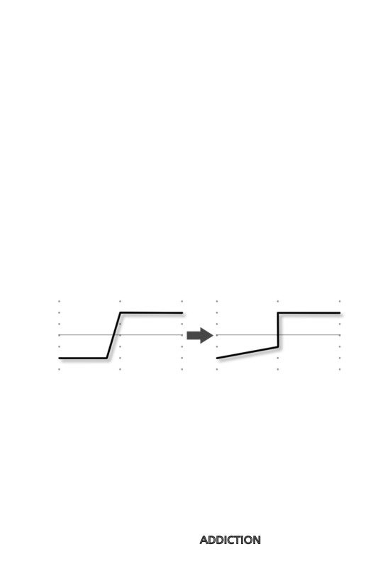
fills or stripping out instruments in the middle of a sec-
tion.
So there you have them, 9 ways to transition from one
section to another. Make sure you know all of them
and when to use them.
Note: It is possible to add tension exclusively to the last
couple of beats of a section, for example by having the
drummer play a short fill. This still adds tension to the
whole section, the overall tension is just much lower. So
the correct way of drawing this would be:
(S)hit Test #1: The Friend Test
One of the best ways of learning to write with the Ad-
diction Formula is giving your song to a friend of yours
and asking them to draw an energy curve for your song
(you should briefly explain hype and tension). Then
analyze their curve - is it what you expected?
THE ADDICTION FORMULA
61
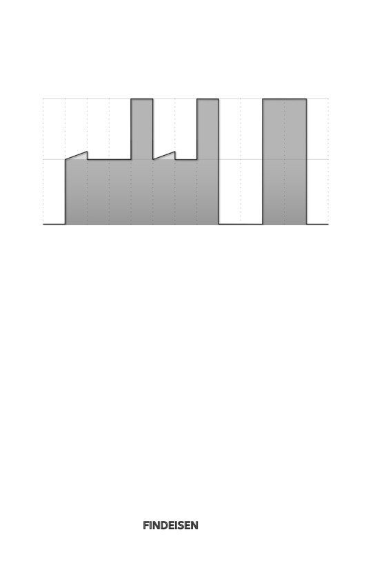
Let’s do it together to show you what I mean. The fol-
lowing curve is derived from a song a colleague of mine
wrote recently:
Take a minute to find all the good and bad about this
curve for yourself before you read on. What works,
what could be better?
Let’s start with the things my buddy did right:
✓✓
He does have 3 evenly-spaced energy peaks,
✓✓
The lowest point of energy is in the first introduc-
tion,
✓✓
The prim. bridge brings in change.
So what could be better?
ӹӹ
The overall energy is not going up. He needs to ei-
ther make his first verse smaller or the second verse
bigger. The same goes for the choruses.
62 FRIEDEMANN FINDEISEN
ӹӹ
There is no build-up to the big moments. The verses
and bridge should systematically increase their hype
levels and use tension to smooth out the hard edges.
ӹӹ
Non-sensical build-ups. The verses build up to noth-
ing - you can see this by the energy going up and
dropping back down again. We know this as a False
Promise. Very dangerous.
Make sense? Go do it with your songs.
Question:
Are there hit songs out there not using the Addiction
Formula?
Answer: There are no pop hits that I’m aware of that
don’t use it at all. It really seems to be used all over
the board - a real “rule of hit writing” you could say.
However, every now and then you’ll have a song that
stretches the rules, 3 of which I want to show you now:
Mark Ronson - Uptown Funk ft. Bruno Mars: While large-
ly following the Addiction Formula, the 1st and 2nd
verse have identical energy levels, which makes the be-
ginning of the 2nd verse an opportunity to turn this
THE ADDICTION FORMULA
63
song off (we will discuss this on page 207).
The Black Eyed Peas - I Gotta Feeling: Although this
song does use tension & hype very effectively for the
most part, the second verse is lower in energy than the
first and the second and third chorus are very far apart.
Hype changes every 16 bars (instead of every 8 bars).
Beyoncé - Run the World (Girls), 7/11: The way the at-
tention of the listener is guided through these songs
is phenomenal, albeit unusual. They don’t follow the
1-2-3 rule and chorus and verse don’t stand out as clear
energy peaks or troughs. While both songs follow the
Addiction Formula, they use it in a very original way, so
make sure you give these songs a listen.
Summary:
The 4 steps to designing your energy curve are:
✓✓
Determine the amount of your big moments. 3 is
always a good start.
✓✓
Placement. End big, globally increase tension, 1-2-3
rule (1 introduce - 2 repeat - 3 change)
✓✓
Smooth out the build-ups. Use hype, tension or a
combination of the two to accomplish this.
64 FRIEDEMANN FINDEISEN
✓✓
Smooth out the transitions. The possibilities are
jump, smooth, drop, surprise, overshoot, false prom-
ise, flatline, lift and negative tension.
Now I know you’re probably itching to find out how to
set energy levels in your song, but before we get to that
I want to share one more thing with you: The most
popular energy curve in the world…
THE ADDICTION FORMULA
65
Hollywood’s
Secret Formula
The Most Popular Form In The World
In this chapter, I want to introduce you to the most
popular and effective energy curve there is in song-
writing. There are many more curves that work, but
I always keep this “Hollywood curve” in the back of my
mind when I’m writing - even when I’m using a dif-
ferent curve. I am almost a hundred percent sure that
you’ve used this curve before, but I want to show you
why it works so well and point out a couple of things
you can do to make it even more powerful so it drills
down right into your audience’s mind.
Screenwriters have perfected the art of storytelling over
decades. They know exactly how to unravel a mystery,
when to be funny and when to be dramatic, how to
make us fall in love with the main characters and how
to make us hate the bad guy.
In his book Screenplay (1979), Syd Field introduced the
66 FRIEDEMANN FINDEISEN
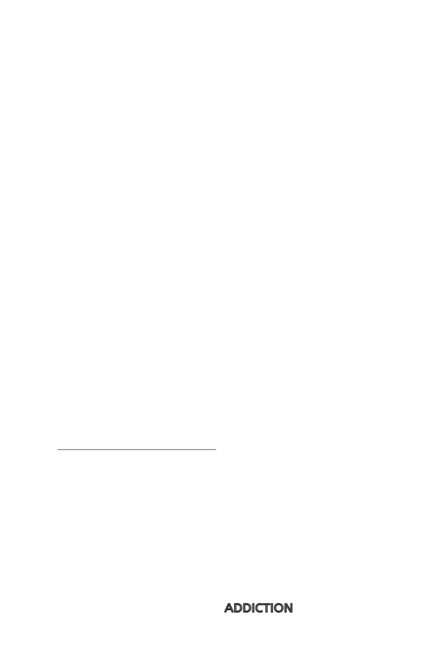
world’s now most popular structure to film 1. Nearly
every movie you know follows this structure. It consists
of three basic acts:
1) Setup, where we are introduced to the hero and his
problem (sometimes called the inciting incident).
2) Confrontation, where the shit hits the fan. Our hero’s
attempts to bring the adventure to a halt only result in
more complications.
3) Resolution, where the hero has to face his ultimate ob-
stacle, and in doing so either succeeds or fails.
Whether we are talking about the Lion King, The Ma-
trix or Insidious, this structure is always present. You
have probably seen hundreds of movies that used this
structure, but never noticed it. Hollywood swears by it.
Scripts that don’t follow the formula get turned down.
But why is it so effective? Says Daniel McInerny 2:
1 He based it on the dramatic structure by Gustav Freytag which in
turn is based on Aristoteles’ 2-act structure that had an act before
and after tragedy strikes (notice that the midpoint still plays a major
part in Aristoteles’ 2-act structure). In Poetics, Aristotle also talks
about a 12-act (!) structure. We will come across this number a cou-
ple of times, too.
2 “On that Good ‘Ole Hollywood Ending”, Aleteia, Nov 29, 2013
THE ADDICTION FORMULA
67
“The central reason why three-act structure resonates so pro-
foundly with the human spirit, such that we never tire of
its rhythms, is that it allows us, in a most compressed and
evident way, to contemplate our lives in miniature. Three-act
structure is the structure of life. It is the imitation of our-
selves being thrown into an adventure not of our choosing,
and of working out a resolution to it in which we ultimately
either succeed or fail. 1”
Let’s take a close look at what the 3-act structure has
in common with music. To illustrate my point and to
make this whole shebang a little more entertaining, I
wrote you a little script following our structure. Your
job is to find commonalities between this story and
standard song structure. Ready? Let’s go.
Act 1
We get to meet John, our hero. John is a family man in a
mid-life crisis. He is bitter and also a bit of a wimp. He
lives his life not knowing that within a day, everything will
be different.
1 Just an interesting observation here: Did you notice Daniel’s
choice of words in his article? “Resonate”, “Rhythms”…
68 FRIEDEMANN FINDEISEN
The first couple of minutes have to win people over or
they will leave the theater. This opening sets the mood
for the rest of the film and introduces our characters. It
marks the lowest energy level in the entire movie.
When John hears that he is being drafted, a world ends for
him. He does not want to go. He has to say goodbye to all
his loved ones.
Just as we begin to like our character and want him to
be happy, they are confronted with a problem. Some-
thing rattles their status quo.
Act 2
John arrives in the middle of a raging war. He is confronted
with death and misery.
Act 2 typically occurs at the 30-minute mark (after a
fourth of the film). This is where we fully realise the
weight of our problem for the first time. It is the second
moment after the introduction that can make or break
a film, as it sets the highest level of energy. Combined
with the introduction this gives the audience an idea of
the dynamic range of the movie that they are seeing.
THE ADDICTION FORMULA
69
After standing out as the worst soldier in his unit, John re-
alises he has to toughen up if he wants to make it out alive.
He trains hard and what do you know - becomes the first in
his unit to learn how to assemble his gun in under a minute.
When a fellow soldier gets into serious trouble during an ex-
ercise, John is the only one brave enough to help him, which
earns him the respect of his fellow soldiers and what used to
be a unit becomes friends.
Things slowly sink in. The character tries to deal with
the problem. He slowly gets used to his new situation
and becomes a different person. He has to, because
trouble is lurking around the corner.
The Midpoint
The big battle comes and John’s unit fights hard - and
emerges triumphantly. John is skyping with his family who
is relieved that everything is ok, when suddenly a group of
people enter his tent and kidnap John, killing one of his
friends. Cut off from his unit, John is on his own.
The exact middle of the movie (60-minute mark or 60-
page mark) is where our second big moment happens.
It comes in strong, and we naturally assume it will be
70 FRIEDEMANN FINDEISEN
the big finale, but something unexpected happens: We
move into new terrain.
Act 3
John is kept prisoner for a long time, grows a beard and
loses a lot of weight. After half a year of Imprisonment he
finally sees a chance to escape. He manages to run for about
an hour before they find him. When everything seems lost
and John is to be executed on the spot, suddenly bullets start
flying and one of his evildoers falls to the ground dead. It’s
his unit that’s come back for him. Together, they overrun their
enemies. John returns as a war hero.
When everything seems as though we couldn’t possibly
go back to normality our second turning point hap-
pens and things very quickly move toward the climax.
John takes a flight back home. When he sees his family, he’s
too tired to smile. He is not the man he used to be.
The ending can be a big finale or it can end on a small-
er, more personal note. It returns to the status quo of
the introduction, but since a lot of things have hap-
pened in the course of our story, things are slightly dif-
THE ADDICTION FORMULA
71
ferent. This is where our character development really
becomes obvious.
Study the curve on the opposing page. See how well
that translates to songs? See how the energy moves up
and down similarly, how the arrangement reflects the
story? Do you see the energy curve, the 1-2-3 rule, the
way tension and hype interact in this story?
So what can we learn from this Hollywood formula?
Well, it basically gives us a great energy curve to work
with.
Its properties are:
✓✓
There are 3 pretty much evenly-spaced energy
peaks,
✓✓
The peaks are preceded by troths that build up to
the peaks,
✓✓
The biggest energy peak is last,
✓✓
The lowest point of energy is in the first act,
✓✓
After the second energy peak, the energy goes way
down.
72 FRIEDEMANN FINDEISEN
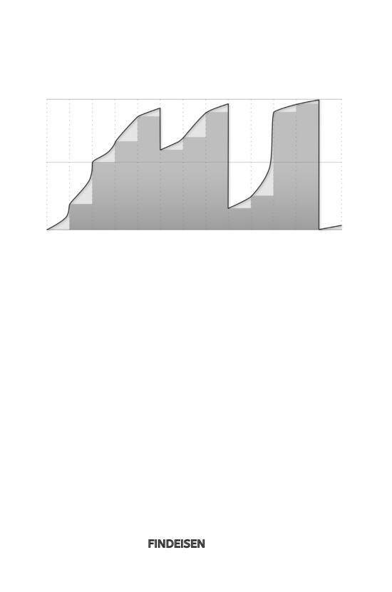
You can probably already tell that we’re talking about
the following form:
(Intro, Verse, Verse cont. Pre-Chorus, Chorus, Verse,
Pre-Chorus, Chorus, Bridge, Bridge cont., Chorus,
Chorus, Outro)
The closer you are to this structure, the more your song
will take advantage of its benefits.
Have you ever had the pleasure of falling asleep dur-
ing a movie? Then you know that if a movie does not
deliver enough big moments of gratification, you are
likely to zone out sooner or later.
If we (subconsciously) feel like a section in a song is go-
ing on for too long, we get restless. The need for change
74 FRIEDEMANN FINDEISEN
is so great that we create it ourselves by changing the
station.
Screenwriters call this pacing. For example, as a writer
for action films or thrillers, you are expected to have
a big moment every ten pages (which equals roughly
every ten minutes). Otherwise your movie will drag.
Luckily, this principle is already built into the holly-
wood form.
Let’s go literal here for a second and assume a standart
movie is 120 minutes. If we need a moment every 10
minutes, that gives us 12 moments for the whole movie.
Well, how many moments does a song have (assuming
that one section is 8 bars and not counting the begin-
ning of the song of course)?
1. Beginning Verse
2. Verse Continued
3. Beginning Pre-Chorus
4. Beginning Chorus
5. Beginning Second Verse
6. Beginning Second Pre-Chorus
THE ADDICTION FORMULA
75
7. Beginning Second Chorus
8. Beginning Prim. Bridge
9. Prim. Bridge Continued
10.Beginning Third Chorus
11.Beginning Fourth Chorus
12.Beginning Outro
12 exactly. And if that wasn’t weird enough already,
now notice that the beginning of the second chorus
(midpoint) is at exactly half.
Weird, isn’t it? How mankind subconsciously produc-
es things following the same principles over and over
again? From my own experience, I could show you
similar structures in marketing, card magic and pub-
lic speaking. Like the golden ratio, there seems to be
something about this structure that resonates with peo-
ple, almost like a key that fits perfectly into the part of
our brain that holds our attention.
Summary:
✓✓
The most popular energy curve in pop music by far
is the “Hollywood Curve”
76 FRIEDEMANN FINDEISEN
✓✓
A song written with the Hollywood Formula is struc-
tured as follows: Intro, verse, verse cont., pre-cho-
rus, chorus, verse, pre-chorus, chorus, prim. bridge,
prim. bridge cont., chorus, chorus, outro.
Now let’s zoom in a little bit more and go from the
whole movie to its scenes in the next chapter. So we’re
now slowly transitioning from theory to practical song-
writing.
THE ADDICTION FORMULA
77
And… Scene!
Let’s Write A Thriller
Let’s look at each section of the hollywood structure
from a dramatic standpoint and see how we can keep
them interesting.
If you want to be a master songwriter, the one thing
you have to completely internalize is understanding the
different sections of your song. I will showcase how the
hollywood structure works here and leave it up to you
to apply what you learn to your own structures.
The Intro.
The intro really holds a special place in dramaturgy, as
it presents the status quo. We get to see our hero before
he is thrown into all that drama, we get to experience
him in his day-to-day life.
The screenwriter’s job here is to make sure that our
hero seems like someone we would like to be friends
with. If the writer fails to do this, we will simply not
care enough to see what happens to him next.
78 FRIEDEMANN FINDEISEN
In music, this is equally true: With the intro, we set our
status quo, show the listener what our song looks like
at its lowest energy level. This is why it’s much harder
to write songs that start strong - where do you go from
there?
Sound is very important during these first few seconds
of our song. It’s like our hero: we either like him or
we do not. So make sure your instruments sound great
from the get go.
The First Verse.
Our now beloved best friend has a problem. A series of
events is set in motion that will lead to a big bang very
soon. The hero tries to get out of his situation but only
winds up deeper in the rabbit hole.
The lyrics introduce what our song is about. The sing-
er’s tone of voice shows us how he feels. We see he has
something he needs to get off his chest. He’s vaguely
describing his situation, our anticipation rises. We want
to know what’s going on, want to know what the fuss is
all about.
THE ADDICTION FORMULA
79
Just like in the movies, the verse is there to introduce
us to the problem and at the same time foreshadow the
chorus.
The biggest mistake you can make in the verse (really
in arranging in general) is to write without looking at
the big picture. Look at the 3 act graph again. The first
act is not a horizontal line! Instead, see the verse as a
springboard into the chorus. It is a period of antici-
pation, there to increase the excitement until the big
bang! So build hype and add tension.
The First Pre-Chorus.
The pre-chorus is, as the name already suggests, not a
self-contained section. It is just a Transitional Bridge. See
it as a kind of modulation from the verse to the chorus.
Even more so than the verse it only has one job to do:
Creating tension. If there is ever a section in which you
can get out all your techniques for creating tension, this
is it. So an electronic producer might introduce an Up-
lifter or Noise Sweep here (increase in tension). Similarly,
the melody typically goes higher (increase in hype) and
therefore forms a pivot point between a low verse and
a high chorus.
80 FRIEDEMANN FINDEISEN
The First Chorus.
The first turning point in film displays the scope of the
movie to the audience: If it is too small, we will expect
the rest of the movie to be small. On the other hand,
we do not want to oversell it either, as we want people
to feel satisfied about our ending as well. It is a difficult
balance act of figuring out just how big your first cho-
rus should be.
I have found the following to work well: Write your last
chorus first. Make it as big as possible and copy/paste
it to create your first chorus. Now strip out everything
that isn’t strictly needed to convey the feeling of gratifi-
cation. Maybe your percussion can go or a pad. Maybe
the backing vocals can go. Never delete for this kind of
thing, always mute. You will want to try out different
combinations.
Make sure you always listen in context: There needs to
be a noticeable jump in hype from pre-chorus to cho-
rus. If it’s not strong enough, either thin out the pre-
chorus (this in turn might mean thinning out the verse
as well) or add back elements to the chorus.
THE ADDICTION FORMULA
81
The Interlude.
Like the pre-chorus, the interlude (or post-chorus) is an-
other type of transitional bridge that can be used to
transition from a high-energy chorus to a less energetic
second verse.
However, unlike the pre-chorus, it typically does have
its own purpose. It is almost always instrumental and
focused on groove. Although mostly used in rock music
as a means of reintroducing the main riff 1, it is also of-
ten used in pop music. Here, it often takes the role of a
dance part 2 or introduces the hook 3.
The Second Verse.
After the first big moment hit us, we realize we are in
big, big trouble. Now what do we wanna see? Do you
want to see the hero to go back to his everyday life and
pretend that nothing has happened? Or do you want to
see them deal with their problem? This is called character
development in writing - we want our hero to go through
1 Staind - Fill Me Up
2 Katy Perry - Dark Horse
3 Rihanna - Umbrella (feat. Jay-Z, depending on the version at 0:50 or
1:18), Clean Bandit - Rather Be (feat. Jess Glynne, 1:20)
82 FRIEDEMANN FINDEISEN
some changes. No one goes through a big bang without
rethinking their life, so returning to “problem” level
feels almost inhumane.
While the first chorus is the hardest to write, the second
verse is the hardest to arrange. Too many writers lose
all their pep here and go back to the energy level of
their first verse 1. Remember: You want to be moving
forward! Find a way to make your second verse bigger
than your first while keeping it in anticipation mode.
Implied Tension is an excellent way of doing this, as we
will discuss when we talk about arrangement.
The Second Pre-Chorus.
The same goes as for the first pre-chorus: Just make
sure you build to the second chorus. After the more in-
tense second verse the second pre-chorus is also more
energetic than the first. However, its role as a pivot
point has not changed.
The Second Chorus.
When the shit hits the fan for a second time in our
1 As we saw in Uptown Funk.
THE ADDICTION FORMULA
83
movie, make sure you are not just rehashing the first
chorus. Drama needs to keep going up! Find a subtle
way to make your second chorus slightly bigger than
the first (unmute one or two new tracks or use any oth-
er technique from part 2 of this book).
The Primary Bridge (aka Bridge or C-Part).
Imagine you are the person who invented the 3 act
scheme. If you want your finale to have the proper
bang, what can you do after the second chorus to make
that bang even more impactful?
Your frist thought would be to go smaller. Problem is,
you can’t return to your status quo - your hero has been
through too much! Just going back to another verse
feels anticlimactic and predictable. So what do you do?
You go into unexplored terrain, you completely change
the game. This is the moment where Jenko & Schmidt
from 22 Jump Street turn against each other. When the
villagers in Beauty and the Beast start their hunt for the
Beast. It’s the moment that completely changes the
game. Nothing will ever be the same, the status quo
seems destroyed.
84 FRIEDEMANN FINDEISEN
Honestly, you can’t go wrong here in terms of ideas.
Anything is possible and people will be ok with it. It is
a good moment to bring in new sounds (such as solo
instruments or a rap), change keys, go crazy. Prim.
bridges are a great moment for creativity. Do not slag
them off as not important though! The prim. bridge
does have a purpose! It is there to provide contrast, to
show a different side of the problem, to surprise. It is
up to you whether you want to go small or big, just
make sure you introduce enough tension to drive your
song towards your last chorus.
The Third and Fourth Chorus or Finale.
This is it - the moment everybody’s been waiting for.
The big shootout, the wedding, the tragic death, the re-
alization that christmas miracles do happen 1. A movie’s
finale needs to be huge and satisfying so people leave
the theater telling everyone what a great time they had.
The third chorus is completely dependent on what
happens in chorus #4, so we will look at that one first.
The fourth chorus or finale is not as set in stone as the
1 Usually in separate films, though.
THE ADDICTION FORMULA
85
rest of the song. Whereas before everything needed to
be organised, at this point we have already heard the
chorus three times and can allow ourselves to go a little
crazy.
Your party is nearing its end - the men wear their ties
around their heads and the women start taking off their
shoes. This part is really for everyone who loved the
party and who wants the night to end on a high point.
No reason to be shy here, because everyone who wasn’t
into it from the start has left already anyways. If people
wouldn’t want you to go crazy at this point they too
would have already left.
Don’t fall into the trap of just repeating your chorus
two more times here. There needs to be some kind of
build up in the last chorus, however subtle.
Here are a couple of examples that work well here, and
we will cover many more in part 2:
86 FRIEDEMANN FINDEISEN
Add new instruments. Guitar solos, Strings, Horn parts,
Synths, backing vocals all work well 1.
Change the melody slightly so it hits more top notes. This really
builds up some energy and puts your last chorus in the
highest overall range 2.
Let the background vocals take over the main melody (panned all
the way to the sides) and your main singer improvises over it 3.
You are creating your energy by effectively just adding
another layer on top of your chorus and by really open-
ing up your stereo panorama. This is a great technique
because it gives your audience the chance to sing along
with the background choir if they just want to sing the
chorus.
Change the lyrics. This approach is overlooked by many,
but it works very well. Introducing new lyrics to your
1 Sam Smith - Stay With Me, Linkin Park - Numb, Alien Ant Farm -
Smooth Criminal
2 Pharrell Williams - Happy, Sam Smith - Stay With Me, Staind - Fill
Me Up
3 Aliyah - Try Again, Jessie J - Price Tag (feat. B.o.B), Justin Timber-
lake - Cry Me A River, Pink - Just Like A Pill
THE ADDICTION FORMULA
87
chorus is a great technique because it gives you a chance
to lyrically finish your story 1.
Instead of adding to the last chorus, it is also possible
to subtract hype from the third chorus. This way you still get
your precious rise in energy for the last chorus 2.
The Outro.
This is the moment where John from our little movie
earlier gets to meet his family again. It is a more per-
sonal ending that revolves around the character rather
than the story. It simulates a return to the status quo.
On the surface, it appears as though John is back where
he started, but everything is different of course. Our
hero has been through some life-changing events that
have made him a stranger to his family.
The outro is a way of ending on a small and personal
note. By rehashing the intro you come full circle, which
can be used very effectively if you want to add a closed
ending to your story. The main thing to keep in mind
is to keep your outros short. This is the leave-them-
1 Staind - Please, Tina Dico - The Other Side
2 Sam Smith - Stay With Me, Linkin Park - Until It’s Gone
88 FRIEDEMANN FINDEISEN
wanting-more part. Do not keep this going longer than
you absolutely have to.
Other Ways To End Your Song
There are a lot of other options available to you that I
want to quickly mention before we move on:
End On A Fade Out 1. Even though fade outs are going
out of fashion 2, this technique still pops up here and
there in the charts every now and then. It suggests a
kind of “and they lived happily ever after” - ending.
Ending Cold. This refers to ending with a big hit at the
end or right after your finale. This can feel a little un-
satisfying - It feels a little like watching Liam Neeson fi-
nally find and save his daughter in Taken and then not
getting the satisfaction of seeing them be happy about
it, but it has a lot of power.
1 Robin Thicke - Blurred Lines, Daft Punk - Get Lucky, Macklemore
& Ryan Lewis - Can’t Hold Us (feat. Ray Dalton)
2 Source: A Little Bit Softer Now, A Little Bit Softer Now - The sad,
gradual decline of the fade-out in popular music.. (article retrieved from www.
slate.com)
THE ADDICTION FORMULA
89
End On Another Post-Chorus. This will end your song on
a groove. Why is this a great technique? Because like
a pavlovian dog, the listener is subconsciously condi-
tioned to think that after the post-chorus he will hear
the verse again. If that doesn’t happen, it’s like they
practically have to play your track again.
Summary:
✓✓
The first verse introduces the song’s theme and leads
up to the chorus.
✓✓
The pre-chorus acts as a pivot point between verse
and chorus. It needs to create tension.
✓✓
The first chorus should be the smallest of all cho-
ruses.
✓✓
The interlude is rhythm-based and acts as a soft
landing from chorus to second verse.
✓✓
The second verse needs to be bigger than the first
verse. Move forward!
✓✓
The second chorus should be slightly bigger than
the first.
✓✓
The primary bridge should go into unexplored ter-
ritory. Anything goes, as long as it leads up nicely
into your finale.
✓✓
The third chorus is highly dependent on the fourth
90 FRIEDEMANN FINDEISEN
and should thus be arranged after it.
✓✓
Ways to end your song: Outro, Fade Out, Cold End-
ing, Post-Chorus Ending
Alright. So you got an idea what the hollywood curve
looks like and how it works. Now let’s get to the good
stuff, let’s get practical. It’s technique time.
THE ADDICTION FORMULA
91
PART 2:
elements
In this part you will learn everything you need to know
about the six elements of songwriting:
✓✓
Arrangement
✓✓
Part-Writing
✓✓
Harmony
✓✓
Lyrics
✓✓
Rhythm
✓✓
Production
Introduction To Part 2
Now We’re Talking
If music really is a language as many people say, then
let’s see what we can learn from communication that
could be of interest to our writing process.
There are four steps to any form of communication:
There is the conception of thought and encryption
through language on your side, and a decryption and
resulting thought or feeling on the side of your coun-
terpart.
For example, a successful piece of communication on a
first date would be:
Thought: “I want us to get to know each other.”
Encryption: “Did you know that I’m really into dinosaurs?”
———————
Decryption: “She must really like dinosaurs”
Thought: “I now know something about her that I didn’t know
before. #communicationkicksass”
THE ADDICTION FORMULA
93
…whereas communication gone wrong would be:
Thought: “I want us to get to know each other.”
Encryption: “Did you know that I’m really into dinosaurs?”
———————
Decryption: “Oh my god, she has a weird fetish!”
Thought: “I am not a dinosaur and therefore not her type. #sad
#tyrannosaurusex”
In this case, the decryption part went wrong, which
in turn might be because the encryption wasn’t clear
enough.
As songwriters, we face much the same problem: If one
of the steps is not executed well, it will lead to confu-
sion and most likely skepticism. The four steps trans-
late to music as:
Thought: The story you want to tell, i.e. your energy curve.
Encryption: Your finished production.
———————
Decryption: How your audience perceives or understands your
song.
Thought: How your audience likes or dislikes your song.
94 FRIEDEMANN FINDEISEN
We really can’t control step number 4, but we can take
control of steps 1 and 2 and if we do a good job with
these, then step 3 will take care of itself.
Let’s combine this idea with what we have learned so
far:
✓✓
If you want your audience to understand you, you
need something to communicate first. This state-
ment does not necessarily have to be expressed
through lyrics - music alone is perfectly capable of
doing this, but your song needs intent, a story. As we
have learned, this means playing with anticipation
and gratification and choosing the right moments to
switch between the two.
✓✓
This story can be expressed visually through energy
curves. We have learned 9 paths our curve can take:
Jump, Smooth, Drop, Surprise, Overshoot, False Promise,
Flatline, Lift and Negative Tension.
✓✓
This curve is our starting point and all the elements
of our song will follow it.
The next step is to express the energy curve in music.
This can be seen as the encryption part of telling your
story. As mentioned before, if your listener could draw
THE ADDICTION FORMULA
95
your energy curve after listening to your song you did
a good job encrypting. If however he draws a different,
less musically beautiful curve, this means we failed in
telling our story. The story itself might be fantastic, but
if we can’t express it through our music, it is practically
worthless.
Part 2 of this book is all about telling your story. I call
this process riding the energy curve, because if done right
your song will take your listener on a ride 1. We will
go through each element of songwriting and see how
it relates to your energy curve. Moving from the most
general all the way down to the details, we will talk
about the six elements of songwriting - arrangement,
harmony, rhythm, part-writing, lyrics and production
- and see how we can use each element to increase or
decrease hype or introduce tension.
A Couple Of Notes.
The following lists of techniques are by no means com-
plete. My focus for this book was on commercial pop
music, so if you write rock or country, I’m sure you can
1 This is also why I explain hype and tension as gears and gas.
96 FRIEDEMANN FINDEISEN
think of more techniques to add to the chapters - and
I openly invite you to do so! I am convinced that once
you “get it” you can figure out where they belong and
just scribble them in.
Measuring energy is not a precise science and it doesn’t
need to be. I’ve said it before but I want to say it again:
Everything we will talk about is relative. If you play me
a section of a song without letting me hear what comes
before or after, it is impossible for me to determine how
high in energy this section is.
The chapters of part II can be read out of order if you
so desire. So if you’re mostly interested in rhythm, you
can jump there right now. I do however recommend
reading the chapter on arrangement first because it
contains a passage on Implied Tension which comes back
in the other chapters.
It is important to understand that all the elements work
together in a finished song. One element alone doesn’t
determine the look of your energy curve, it is rather
the interplay of various elements acting at the same
time. So even though one element in your song may
THE ADDICTION FORMULA
97
go down in hype, the overall energy can still go up if
another element increases in hype.
Remember: Not all techniques are equally powerful!
Some barely change your energy and others can have
a lot of impact. If you’re ever in doubt which element
is the most useful for what you’re trying to accomplish,
you can look it up on page 44. Or just listen.
98 FRIEDEMANN FINDEISEN
Arrangement
When it comes to setting hype levels, there is no other
element as powerful as arrangement. The art of decid-
ing where certain instruments come in, what they play
and when they drop out is one of the most important
skills a songwriter could learn. And it’s not just useful
in theory: Literally every single song that has ever been
a commercial success uses arrangement as its main tool
to set hype levels.
So let’s take what we learned when we studied energy
curves and apply it here to find out what makes a suc-
cessful arrangement:
✓✓
Give your song direction by increasing the hype lev-
el every 4 or 8 bars (this creates anticipation).
✓✓
Make your energy peaks (moments of gratification)
THE ADDICTION FORMULA
99
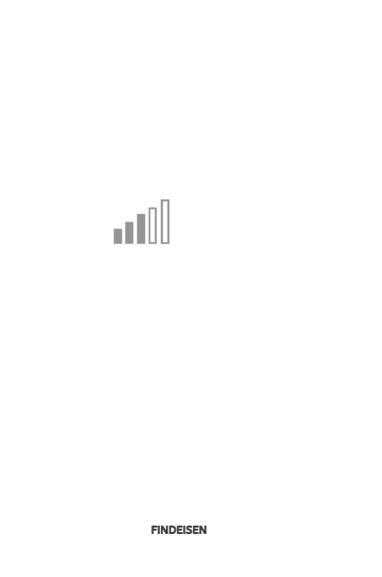
stand out above the rest of the song.
✓✓
Tension can be used to further smooth out transi-
tions.
Setting Energy Levels
So let’s get down to the nitty gritty. The question is: how
do we use arrangement to reflect our energy curve?
Setting
HYPE
The rule is: The fuller the texture, the higher the hype.
Texture refers to the overall sound at a given moment
during your song. So for example, a texture may consist
of drums, a synth and a bass. To make things a little
easier, we will start by looking at just the melodic in-
struments (drums are discussed separately in the chap-
ter on part-writing), which we will divide into three fre-
quency spectra:
Lows (bass, piano left hand bass),
Mids (piano left hand chords, rhythm guitar)
Highs (piano right hand, guitar higher up the neck)
100 FRIEDEMANN FINDEISEN
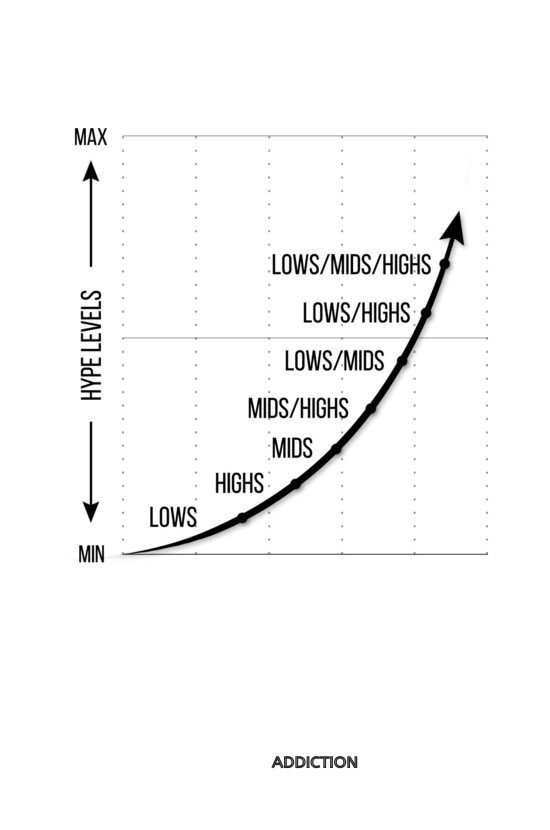
So let’s take each possible texture and put it in order
from lightest (lowest hype) to fullest (maximum hype).
Examples.
None: Lorde - Royals (intro), Avril Lavigne - Girlfriend
(intro), Highs: Miley Cyrus - We Can’t Stop (first verse),
Snow Patrol - Chasing Cars (intro), Mids: Sam Smith -
Stay With Me (intro), Lows: Beyoncé - Partition (interlude
THE ADDICTION FORMULA
101
after first chorus), Mids/Highs: John Legend - All Of Me
(intro), Lows/Mids: Sam Smith - Stay With Me, Lows/
Highs: Skrillex - First Of The Year (Equinox, Chorus), Lows/
Mids/Highs: Lady Gaga - Venus (chorus), Katy Perry -
E.T. (chorus)
So how can you use this graph? Well, if you’re writing
a song using just a piano and you want to increase your
hype level, analyze what you are playing right now to
see where you can go. So maybe you’re playing high
chords in the right hand and a low bass in the left. The
only way to build hype through arrangement is filling
out the middle. This could be done by using arpeggios
in either hand to cover a wider range of pitches 1.
If you have more than one instrument, hype can also
be increased by adding an instrument in the same
frequency spectrum. While this won’t make you very
happy when mixing, you can create many more unique
levels of hype this way.
1 Remember the days of stride patterns and pianists hitting high
notes on the piano with their feet? That wasn’t just energizing to
watch, it also sounded like it.
102 FRIEDEMANN FINDEISEN
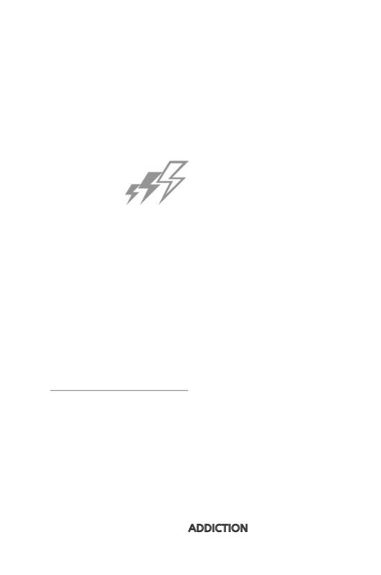
The more textures you know and where they are on the
hype spectrum, the more possibilities you have for tell-
ing your story. So study your favorite songs and listen to
their textures - you can do just that. As long as you’re
using it in a new context, this is not stealing, it’s learning.
using
tension
To introduce tension to a section, you have 2 options:
1. Thickening the texture, for example: adding an instru-
ment half way through a section 1 or letting an instru-
ment from the next part come in early 2.
2. Thinning out the texture. Taking out instruments in the
middle of a section creates a hole in the music which
wants to be filled in the next section 3, i.e. tension.
1 Awolnation - Sail (section begins at 1:05, Pizzicato strings come in at
1:17), Clean Bandit - Rather Be (section begins at 0:48, new bleepy sound
comes in at 0:57), Staind - Now (chorus starts a 16th note early)
2 Clean Bandit - Rather Be (piano pick-up at 1:03), Miley Cyrus -
Wrecking Ball (vocal pick-up at 0:41)
3 Taylor Swift - Blank Space (synth drops out before chorus 0:42), Katy
Perry - Dark Horse (feat. Juicy J, drums cut off at 1:24), Lorde - Royals...
THE ADDICTION FORMULA
103
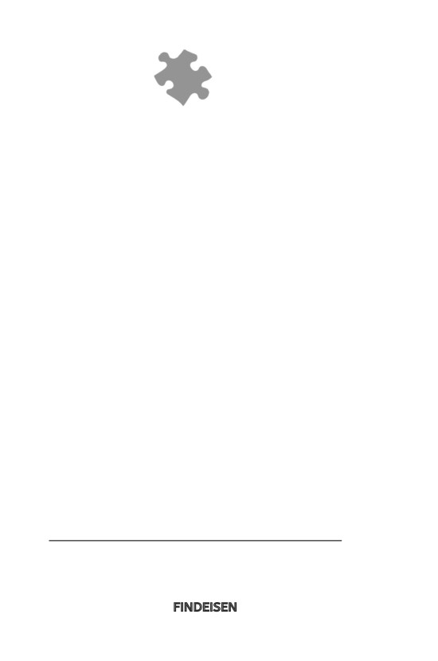
imply
tension
The Third Kind Of Tension
There’s a third option here which is a little bit harder to
grasp. I’m talking about something I call implied tension.
Learning how to use this kind of tension can be tricky,
but is very rewarding. It is more subtle than straight-up
tension and can be used to add interest to a section.
Even though it is heavily featured in the top 200, not a
lot of people know about it or use it in their songs.
Do you remember the last time you were angry with
your significant other and for some reason you were
stuck in the same room together? What did you do?
Maybe you confronted her. Told her exactly what you
were thinking. Of course, she snaps back at you, you
get back at her and both of you get louder and louder.
It’s loud, clear and straight to the point. This is regular
tension.
(music drops out at 0:54), Seether - Fine Again (One Cold Night, guitars
drop out at 2:44, bass drops out at 2:48)
104 FRIEDEMANN FINDEISEN
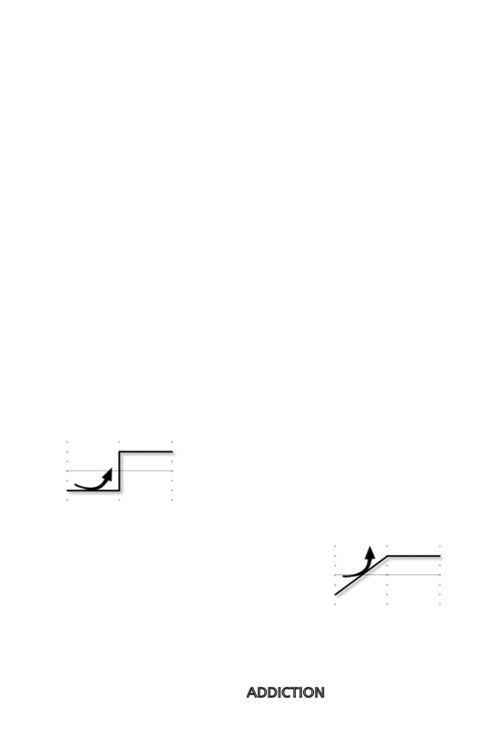
But maybe you didn’t fight it out. Maybe you just sucked
up all your anger and gave each other the stinkeye. You
know the feeling. Even though not a single word is be-
ing said, there is tension in the room. But it’s not the
same kind as when you were openly fighting. This is a
subtle, conceived tension. When you could hear a pin
drop - that’s implied tension.
Structurally, implied tension is very different from reg-
ular tension because it is stationary. You don’t look an-
grier and angrier at each other with every second. No,
the tension comes from the fact that you are keeping
quiet. Graphically, a section with implied tension looks
like this:
The arrow implies that this section
has a strong pull upwards while not
affecting the curve in any other way.
Note that regular tension can be added to a section of
implied tension, although technically
it is not necessary (you’re kind of put-
ting a hat on a hat).
THE ADDICTION FORMULA
105
To really understand implied tension in music, listen
to the following songs first and then we’ll discuss it in
full. For now, just try to feel the tension in the following
sections.
Taylor Swift - Blank Space (verse)
Jason Derulo - The Other Side (first verse)
Deftones - Sex Tape (0:43 - 0:54)
Jhené Aiko - The Worst (chorus)
Tove Lo - Habits, Hippie Sabotage Remix (0:48 - 1:03)
XXYYXX - About You (0:00 - 1:35)
Avril Lavigne - Girlfriend (opening chorus)
Justin Bieber - Beauty And A Beat (0:46 - 1:00)
Can you feel how all these sections want to go some-
where? They all pull you towards the next section and
thus mark moments of anticipation. And yet there’s
nothing building up or being taken away within the
sections (If you didn’t listen to the songs, do it now.
Audition only one of them if you like, but experience it
before you learn what it is).
Why do these arrangements sound tense? Let’s look at
them one by one and find out.
106 FRIEDEMANN FINDEISEN
ӹӹ
There is a noticeable absence of bass in Blank Space,
Sex Tape, The Worst (compared to the verses), Girl-
friend and About You.
ӹӹ
The groove in Sex Tape is missing its bass drum. This
is even more apparent in Beauty And A Beat where the
side chain attenuates the space where the bass drum
should be (called a ghost kick).
ӹӹ
The groove in The Other Side has no snare drum.
ӹӹ
The grooves of Blank Space, The Worst & About You
leave a lot of space (no hi hat). Girlfriend does it too,
but in a less obvious way (it’s also not as tense).
ӹӹ
The vocals of Habits and About You sound tiny, the
vocals in Sex Tape drop out completely.
ӹӹ
The pads in Habits build tension toward each hit of
the snare drum, then instantly drop out.
ӹӹ
The guitars in Girlfriend play just one chord in the
very beginning of the section and then keep mostly
quiet.
So what do all of these have in common?
They make you notice that something is missing (bass, kick
drum, snare drum, hi hat, vocals, pad, guitar). That’s
the key to writing implied tension. Give your listener
THE ADDICTION FORMULA
107
a finger and they’ll want the whole hand. What you
are effectively doing is giving them a peek at the next
moment of gratification by hinting at it during the an-
ticipation phase. This makes implied tension a fantastic
alternative to regular tension that is very “in” 1.
Another fascinating example of implied tension is A
Perfect Circle’s Rose. Listen to how it builds towards
0:37. This example is particularly interesting because it
manages to keep the tension going for 3(!) consecutive
sections.
Implied Tension is a little more complicated because it
seems like a paradox at first: In order to build we have
to thin out the arrangement - which is of course the
exact opposite of how we use hype to increase energy.
So why is implied tension such a fantastic tool? Because
it allows you to go down in hype while still keeping the
listener hooked. There is no way around dropping your
hype levels every now and then so you can build them
back up again. This is where implied tension can really
1 Arrangements using a lot of implied tension: Kid Cudi vs Crook-
ers - Day ‘n’ Nite, Iggy Azalea - Fancy (feat. Charli XCX)
108 FRIEDEMANN FINDEISEN
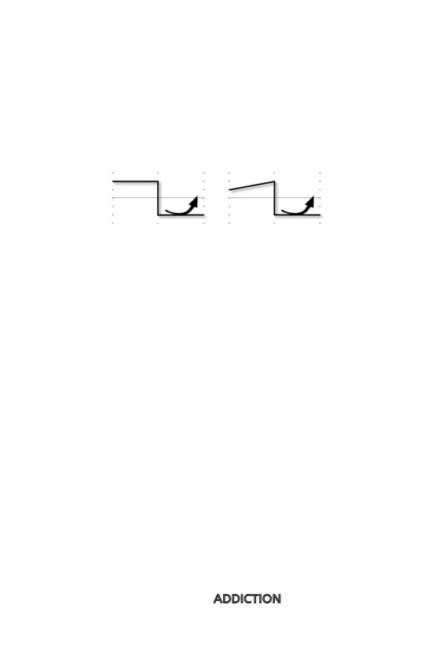
shine. Take this rule as a guide line:
Whenever you use the Drop or Surprise (as discussed
in “The Perfect Energy Curve - Let’s Go For A Ride”), follow
it up with some implied tension:
So again, the idea is to noticeably leave out an instru-
ment, with an emphasis on “noticeably”. If it’s not no-
ticeable, you’re just going down in hype, which is al-
ways a tricky move to pull off.
SUMMARY:
✓✓
Hype can be altered by adding or subtracting ele-
ments from the frequency spectrum.
✓✓
Tension can be introduced by doing the same half
way through a section.
✓✓
Implied Tension is a kind of tension that is based on
noticeably stripping out elements of a section.
THE ADDICTION FORMULA
109
Harmony
Harmony in commercial music has seen better days.
I’m sure you’ve heard Axis of Awesome’s 4 chords and
are already aware of this - what some might call - “prob-
lem”. This is part of the reason why we will focus on
triads and power chords in this book - no options, ten-
sions, clusters or upper structures. If you are interested
in how to use these chords with the Addiction Formula,
I’m sure you can figure out how to apply them yourself
after reading this chapter.
I’m assuming that you know basic harmony theory. In
fact, I’m not intending to teach you anything new in
this chapter but rather want to show you how you can
use what you already know to tell your story, i.e. ride
your energy curve.
110 FRIEDEMANN FINDEISEN
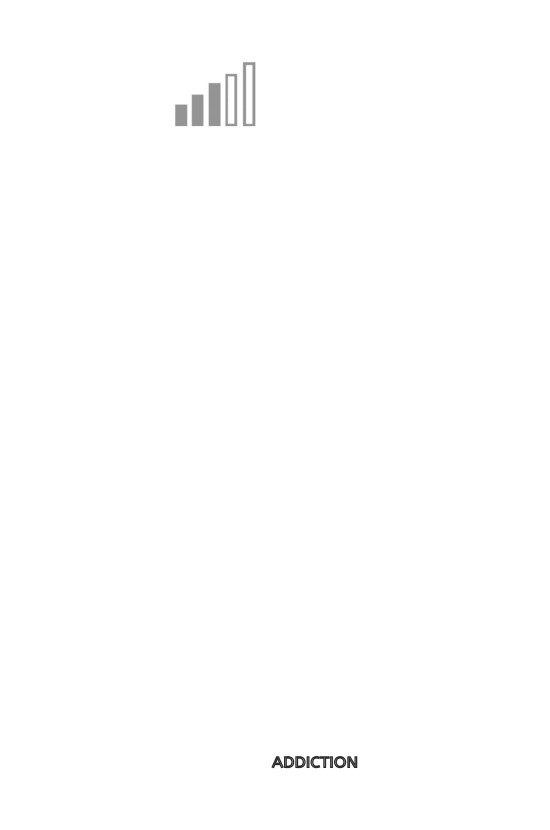
Setting
HYPE
Chords, as any other songwriting element, can be used
to set hype levels.
Voicings.
We already know this principle from the previous chap-
ter on arrangement: The fuller the texture, the higher
the hype. A wide voicing will lead to a higher hype lev-
el, a close voicing to a lower one. Refer to the graph in
the arrangement chapter to determine how full your
voicing is (p.107).
Key Changes.
Changing the key for a new section is the most dramat-
ic increase of hype possible in songwriting. It should
be used very sparingly, so maybe once or twice on an
album, because it is such a big move (you are literally
moving your home). Where do you go? Up is the most
popular choice, typically 1 or 2 half steps. 3 and 4 work
and sound very dramatic, but anything more is point-
less (and keep your singer’s vocal range in mind).
THE ADDICTION FORMULA
111
Interestingly enough, the quality of a chord doesn’t
have any influence on hype. The chord’s quality only
becomes important when we look at tension:
using
tension
When I talked about tension in the very first chapter
on building your energy curve, this is what probably
popped into your head. And indeed, chords can be
used very effectively to create tension.
First, let’s decide which chords are of interest to us.
The diagram on the opposite page displays the 10 most
popular chords in hit songs 1.
To wrap our heads around tension, we begin by divid-
ing a progression into 3 parts: A beginning, a middle
and an end. We will start with the beginning, so we’re
looking at the first chord of a progression.
1 The percentages show the probability of whether a chord ap-
pears in a 4 or 8 bar section of a hit song (based on 1,300 analyzed
112 FRIEDEMANN FINDEISEN
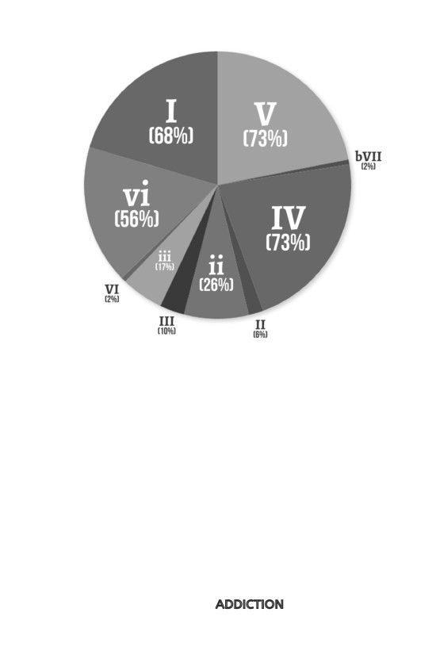
There are 3 types of starting chords that determine the
feel of a section:
ӺӺ
Tonic chords: I, vi, iii, VI, III (major); i, VI, III (minor)
ӺӺ
Subdominant chords: IV, ii, II (major); iv, IV (minor)
ӺӺ
Dominant chords: V, bVII (major); V, VII, bII, v (minor)
The category the first chord falls into determines how
tense a section is: Dominant sections (thus sections that
start with a dominant chord) are the most tense, fol-
THE ADDICTION FORMULA
113
lowed by subdominant sections. Tonic sections have no
natural tension.
Note: Knowing this is useless to you if you can’t hear it.
The best way to get the three categories into your head
is by listening to 12-bar blues. It consists of 3 sections,
one tonic, one sub-dominant and one dominant (I - I -
I - I, IV - IV - I - I, V - IV - I - V). So go listen to James
Brown’s Papa’s Got A Brand New Bag and pay attention
to how each 4 bars the tension changes - from tonic to
subdominant to dominant.
Examples:
ӹӹ
Tonic section: I - iii - vi - IV, as in Jessie J’s Price Tag;
ӹӹ
Subdominant section: IV - I - IV - I, as in Taylor
Swift’s Mine (chorus);
ӹӹ
Dominant section: V - IV - V - IV, as in Idina Men-
zel’s Let It Go (pre-chorus)
The middle of a progression can also be used to in-
troduce tension. This usually doesn’t happen until the
penultimate chord though, as shown in the following
example:
114 FRIEDEMANN FINDEISEN
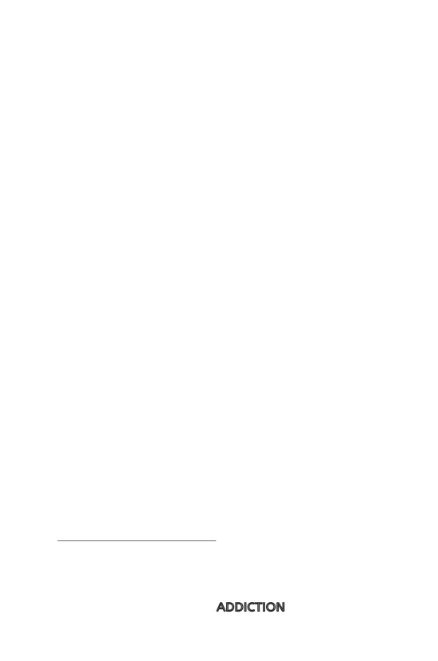
I - IV - Vsus - V (suspended chord building tension to-
wards dominant chord), e.g. C - F - Gsus4 - G
There are other ways to introduce tension earlier in a
progression, although they are very rare in pop mu-
sic. But just to be complete, here’s two examples for
progressions that build tension from the second chord
onwards:
Dominant Chains
I - subV - V/V - V, e.g. C - Eb7 - D7 - G7
Descending Bass Lines
i - i/maj7 - i/7 - i/6 - i/b6 - i/5 - V, e.g. Cmin - Cmin/B
- Cmin/Bb - Cmin/A - Cmin/Ab - Cmin/G - G
The end of a progression is the most common place
for creating tension. To build tension at the end of a
progression, you want to use a concept known as home
and away 1.
The I (in major) or vi (in minor) are your home, the
1 Kachulis, J - The Songwriter’s Workshop: Harmony (Berklee
Press, 2005)
THE ADDICTION FORMULA
115
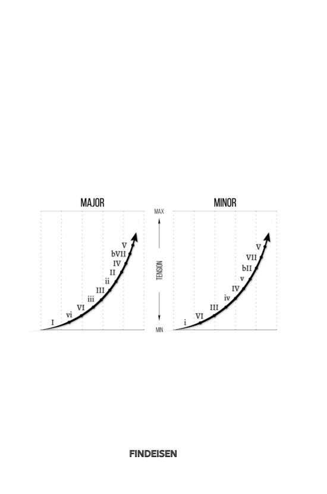
chords with the lowest tension that your music keeps
coming back to for resolution.
Everything else is away from home. How far away it ac-
tually is you can determine with the graph below. But
the further you go, the more you build tension.
So here’s our 10 most popular chords and how far from
home they are:
So, for example:
I - vi has very low tension.
vi - V has very high tension.
I - vi - IV - ii has medium tension.
I - IV - V - vi has very low tension.
116 FRIEDEMANN FINDEISEN
imply
tension
Implied tension can be achieved by leaving out impor-
tant notes of the chord, such as the root note (inver-
sions) or the third (power chords). Note that leaving out
a note has to be noticeable for it to imply tension. So
for example, if you want to add implied tension to a
section using power chords, make sure that the section
right before it uses full triads.
That wraps up harmony for us. In the next chapter we
will look at the most important element for creating
tension with the Addiction Formula.
SUMMARY:
✓✓
Hype can be altered by the wideness of a voicing
and through key changes.
✓✓
Tension can be introduced at the beginning, middle
and end of a chord progression.
✓✓
Implied tension can be achieved by leaving out im-
portant notes of the chord, such as the root note
(inversions) or the third (power chords).
THE ADDICTION FORMULA
117
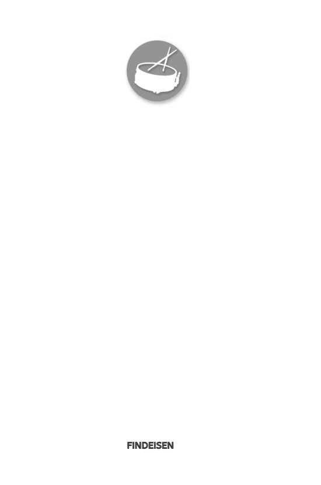
Rhythm
Rhythm is the most useful element for adding ten-
sion, period. Therefore, if you want to become a mas-
ter songwriter, you absolutely have to be proficient in
this. There is no good song without rhythm controlling
hype and tension - literally not one! It is essential for
your song to be captivating and to tell your story.
In order to understand how to set energy levels with
rhythm, we first have to talk about subdivisions. There
are 5 that are of interest to us:
ӹӹ
whole note or semibreve subdivision
ӹӹ
half note or minim subdivision
ӹӹ
quarter note or crotchet subdivision
ӹӹ
eighth note or quaver subdivision
ӹӹ
sixteenth note or semiquaver subdivision
118 FRIEDEMANN FINDEISEN
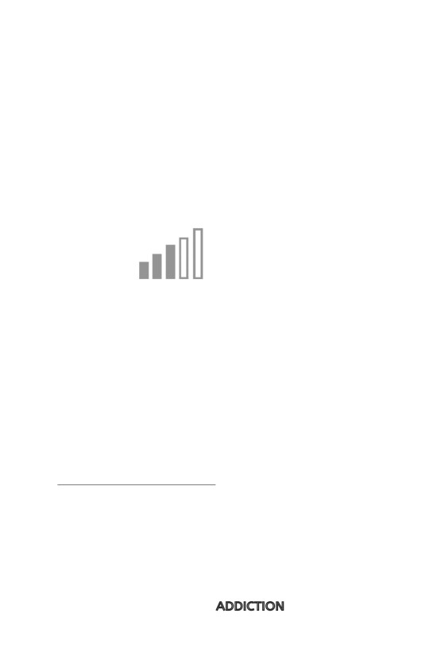
The instrument that normally determines the subdivi-
sion is the drum kit because it’s usually the instrument
that plays the most notes 1.
In the remainder of this chapter, I will be referring to
these as sub1, sub2, sub4, sub8 and sub16 in order to
save paper and to keep everything short & neat.
Setting
HYPE
Let’s look at our 5 subdivisions in terms of hype level:
Subdivision Determines Hype.
The higher the subdivision, the higher the hype level,
the lower the subdivision, the lower the hype. This is
why songs often have their highest subdivision in the
chorus and their lowest in the verse 2.
1 It doesn’t have to be though. Listen to Britney Spears - Work
B**ch (subdivision given by guitar) or Madonna - Hung Up (subdivision
given by synth)
2 Sia - Elastic Heart (1:10 - hi hat catapults song from sub8 to sub16,
sub16 goes back to sub8 at 1:25)
THE ADDICTION FORMULA
119
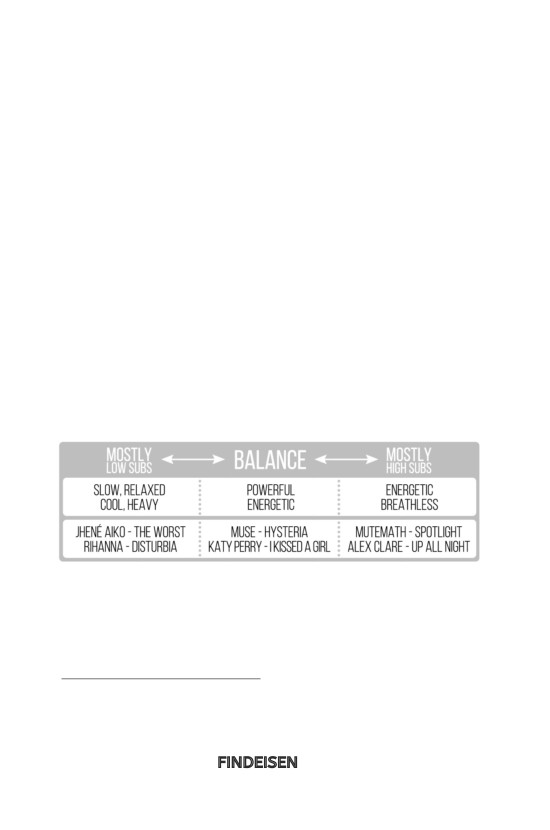
The more instruments following the highest subdivi-
sion, the higher the hype, the fewer instruments, the
lower 1.
Note: Whenever you’re trying to write a high-energy
section, be aware that it’s a balancing game between
low and high subs. The lower subs bring power and
heaviness to your song, whereas the higher subs bring
in the energy.
Make a conscious decision of the effect you want to
achieve and then react accordingly by tilting the bal-
ance towards either low or high subs:
Legato Trumps Staccato.
Switching from staccato to legato results in an increase
1 Sia - Chandelier (0:23 - vocals start following subdivision), Justin Tim-
berlake - Cry Me A River (0:52 - vocals start following subdivision)
120 FRIEDEMANN FINDEISEN
of hype, going from legato to staccato lowers hype 1.
This is also why melodic lines always trump rap vocals
in hype.
Phrasal Length.
To increase hype in this fashion, you want to shorten
the length of your phrases 2. Writing longer lines there-
fore lowers your energy level.
using
tension
Switching to a higher subdivision.
This is just as strong as leading up to the next section
using dominant chains (and it doesn’t sound as “old-
fashioned”). Introducing a sub16 drum fill in a sub8
section is effectively telling your audience “but wait,
1 Some examples for vocals: Katy Perry - E.T. (verse vs. pre-chorus),
Sia - Chandelier (pre-chorus vs. chorus), Lady Gaga - Poker Face (verse vs.
chorus vs. interlude), Jessie J - Who’s Laughing Now (verse vs. pre-chorus)
2 Clean Bandit - Rather Be (feat. Jess Glynne, phrasal acceleration in the
vocals at 0:46), Far East Movement - Like A G6 (0:15, “now I’m feeling
so fly like a G6” shortens down to “like a G6”)
THE ADDICTION FORMULA
121
there’s more” 1 by hinting at a higher level of hype.
imply
tension
Broken Flow.
Again, implied tension is created by teasing the audi-
ence with something they want. In the case of rhythm,
what your audience wants is continuous flow. So if you
want to use implied tension, only let them have bits and
pieces.
Check out Swift’s Blank Space again: The verse is clearly
in sub8 feel, but the vocals and drums suggest sub16.
The point is that the vocals (and the drums especially)
don’t have satisfying sub16 lines, they just hint at it here
and there.
Or listen to Beyoncé’s 7/11: The song is sub8, Beyoncé
sings in sub16 and the hi hat even goes up to sub32 eve-
ry now and then. This technique is very popular in trap
music at the moment. A while ago, during the dubstep
1 Maroon 5 - Moves Like Jagger (snare goes from sub8 to sub16 to sub32
at 1:32), Rihanna - Rude Boy (snare going from sub8 to sub16 at 0:10).
122 FRIEDEMANN FINDEISEN
craze, the implied tension came from the quarter note
triplets in the bass trying to resolve into simple quarter
notes. Again, the key is space. What you aren’t saying is
important.
Contrary Movement.
This one is a little more difficult to use, as it can easily
clutter your arrangement. The idea is to let the drums
fall in between the downbeats of the music. This way,
you’re creating a more “unexpected” drum beat that
doesn’t seem to hit when you want it to. This results in
strong implied tension.
Listen to the second verse of Iggy Azalea’s Fancy and
imagine what it would sound like if the kick and snare
would fall on the 1 and 3 of each measure. See how a
lot of the implied tension goes right out the window?
Summary:
✓✓
Hype can be controlled through change of the sub-
division, by switching between legato and staccato
and by playing with the phrasal length.
✓✓
Tension can be applied by switching to a higher
subdivision half way through a section.
THE ADDICTION FORMULA
123
✓✓
Broken flow and contrary movement can be used to
imply tension.
That wraps up rhythm for us. Now let’s get to the indi-
vidual parts of the instruments and see how they can
be used to tell your story.
124 FRIEDEMANN FINDEISEN
part-Writing
In this chapter, we will look at the five most common
instruments
- vocals, guitar, piano/synth, bass and
drums - and see how they can be used to set hype levels
and increase tension. If your favored musical instru-
ment isn’t among these, drop me an email and I will
help you out.
Before we get all specific, I want to quickly go through
a technique that works regardless of the instrument:
Dynamics.
Dynamics are one of the most important elements for
controlling energy. In fact, just by looking at an energy
curve, you can see the overall loudness at a glance. This
just goes to show how closely connected dynamics and
energy really are. It makes dynamics the easiest way of
THE ADDICTION FORMULA
125
riding your energy curve.
If you’ve ever played in a band you will know that in
the chorus everyone typically plays much louder than
in a verse (“You probably shouldn’t stand so close to the drum
set, man” - “Huh? I couldn’t hear you, I’m standing too close
to the drumset!”). This is because every musician instinc-
tively gets this. Because a wave’s energy is proportional
to amplitude squared, doubling your volume effectively
quadruples your energy!
Hype. In order to set hype using dynamics, go louder for
higher hype and softer for lower hype levels. This, of
course, can also be achieved by adding another instru-
ment in the arrangement.
Tension. Crescendos are your friend. Rising in volume
automatically suggests that a big chorus will follow 1.
So just keep in mind that volume is a key element of
your energy curve. Good. Let’s take a look at our in-
struments.
1 The Calling - Wherever You Will Go (0:41), Beyoncé - Yoncé/Partition
(drums at 0:31), Adele - Set Fire to the Rain (drums at 0:55)
126 FRIEDEMANN FINDEISEN
1) Vocals.
Think of ten purely instrumental songs that were hits
in the past 40 years. Can’t? Think of 5. How about 3?
It seems that vocals are a necessary factor to writing a
hit song. But are there other instruments that tend to
get used a lot to replace the voice?
Electric guitars. Wonder why WahWah pedals are so
popular in rock solos? Perhaps it sounds like the gui-
tar is telling you what to think? Sounds like wow, wow,
wow, doesn’t it?
How many times have you heard people sing a dubstep
bass line (“wob wob wob”)? Does it vaguely sound like
an angry “WHAT?” perhaps?
How about the saxophone? That had a huge career
as a solo instrument in the 80s. It is also known as the
instrument that is closest to the human voice.
Or take the harmon mute (that thing that makes a
trumpet go “wah wah”), mimicking human laughter.
THE ADDICTION FORMULA
127
It appears that all the instruments that have ever made
a hit song have one similar characteristic in common:
Their closeness to the human voice.
What about classical music then? Classical singing
is very different from what we hear on the radio of
course. Upon comparing a violin’s spectral analysis
with a classical soprano’s, Texas A&M biochemistry
professor Joseph Nagyvary has found that sonically,
they are practically the same. I don’t know whether I
am on to something here, but it seems like a strange
coincidence, don’t you think?
The human voice is undoubtedly important in arrange-
ment. Sections without vocals are “just music”; it’s only
when the human voice is involved that the song begins
to speak to us.
Listen to Katy Perry’s Dark Horse (feat. Juicy J): There
is not a single section in this song where we don’t hear
some form of the human voice. Even the instrumental
interlude after the first chorus has “hey”s in the back-
128 FRIEDEMANN FINDEISEN
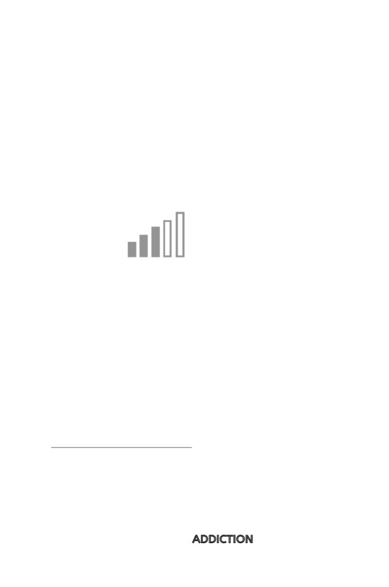
ground 1. If you want high energy, think of ways to in-
corporate the human voice into every section of your
song.
Most of the following techniques can also be used for
other melodic leads, such as guitar, saxophone or synth
solos.
Setting
HYPE
Range.
Controlling hype with vocals is mostly done by pitch:
The higher the pitch, the higher the hype; the lower
the pitch, the lower the hype. This is the reason why
most songs have their highest notes in the chorus and
their lowest in the verse 2.
1 A sample known as mustard hey - on its way to becoming music’s
Wilhelm Scream.
2 Miley Cyrus - Wrecking Ball, Lady Gaga - Poker Face, Rihanna -
S&M, Pink - Raise Your Glass
THE ADDICTION FORMULA
129
Variety.
The more different notes, the higher the hype. This
means one-note melodies have the lowest hype 1.
Vocal Modes.
There are several schools of vocal technique out there
using their own definitions and nomenclature 2 and the
more you know about the instrument you’re writing
for, the better. However, it is unusual to ask a singer
to lower her larynx in the studio. It’s better to know
a couple of sounds that are possible with the voice and
trust the singer to produce said sound. This approach
works regardless of the education the singer has gone
through. So as far as I’m concerned, there are 4 sounds
you need to be aware of:
Neutral, Falsetto (aka Neutral with Air) and Speech, which
turns into Belting (aka Edge) at higher pitches. And here
are their hype levels, taking pitch into consideration:
1 Lady Gaga - Poker Face (one-note melodies in verses, most different notes in
chorus)
2 Cathrine Sadolin’s Complete Vocal Technique (CVT) and Jo Estill’s
Estill Voice Training (EVT) being the most widely taught.
130 FRIEDEMANN FINDEISEN
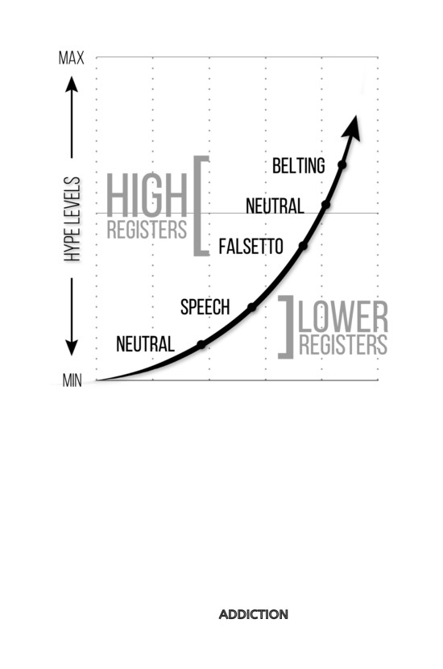
Examples.
Belting: Miley Cyrus - Wrecking Ball (chorus), Sia - Chan-
delier (chorus); Neutral (high): John Legend - All Of Me
(1:32 - 1:43), Ariana Grande - Problem (feat. Iggy Azal-
ea); Falsetto: Katy Perry - E.T. (pre-chorus), Dark Horse
(pre-chorus), Britney Spears - Toxic (pre-chorus); Speech:
Ke$ha - TiK ToK (chorus), Katy Perry - E.T. (verse), Lady
THE ADDICTION FORMULA
131
Gaga - Poker Face (“po-po-po-poker face, po-po-poker face”);
Neutral (lower): One Republic - Counting Stars (verse),
Lorde - Royals
Effects.
There is also a multitude of effects that can be added
on top of the vocal modes to create more interesting
colors and control energy:
Twang (Oral & Nasal). Hype can be raised by adding
twang to a vocal 1. Since it’s a requirement for belting,
twang is often associated with high-energy choruses, al-
though it can be used in any kind of section 2.
Vibrato. This effect is often added to long notes in order
to create interest. Especially in ballads we hear it quite
often 3. By effectively adding more rhythmic pulses to a
line, vibrato makes for another technique that can be
used to increase hype 4.
1 Lady Gaga - Bad Romance (twang sets in at 0:17)
2 Miley Cyrus - We Can’t Stop, Pink - Raise Your Glass, Rihanna -
Umbrella
3 Beyoncé - If I Were A Boy, John Legend - All Of Me
4 Beyoncé - Listen, Ariana Grande - Break Free (feat. Zedd)
132 FRIEDEMANN FINDEISEN
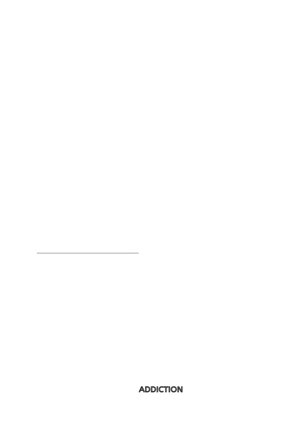
Ornamentations. This little technique (CVT describes it
as “A technique used for producing very fast, rhythmic, and me-
lodic sequences of notes.” 1) is often used in RnB 2. Since it
increases the amount of sung pitches (Variety) and notes
(Rhythm), this clearly adds hype.
Distortion. Apart from very subtle kinds (known as Curb-
ing 3), pop music doesn’t see a lot of distortion. In al-
ternative rock and metal we see other, more extreme
types that can be classified by pitch. The lowest in hype
is known as Growling 4 (low pitch), followed by the mid-
ranged Shouting 5 and the high-pitched Screaming 6 (high-
est hype).
mentation-technique/
2 Ariana Grande - Problem ft. Iggy Azalea (2:46 - end)
3 Mr Probz - Waves, Nickelback - How You Remind Me
4 Opeth - The Grand Conjuration (1:06), Six Feet Under - Ghosts Of
The Undead, Arch Enemy - War Eternal
5 Slayer - Bloodline, Sepultura - Roots Bloody Roots, Pantera - Walk
6 Refused - New Noise (0:43), Linkin Park - One Step Closer (2:06),
Neaera - Let The Tempest Come, Bring Me The Horizon - Can You Feel
My Heart
THE ADDICTION FORMULA
133
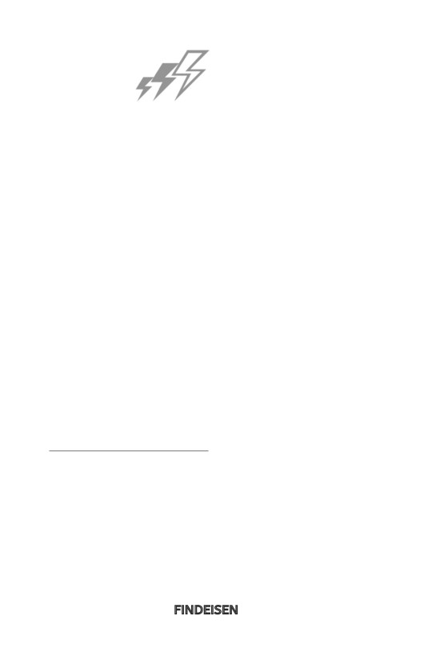
using
tension
Write Ascending Melodies,
i.e. melodies that rise in pitch 1. As pitch determines
hype, it only makes sense that slowly increasing pitch
introduces tension. Vice versa, you can use descending
melodies to create negative tension, which is something
often seen when transitioning from chorus to verse 2.
Change The Vocal Mode.
For this technique, you want to instruct your singer to
change their sound to one with more hype in the mid-
dle of the section 3. It is also possible to amplify the in-
tensity by telling the singer to slowly increase her sing-
ing power 4.
1 Katy Perry - Firework (0:39 - 0:54), Sierra Swan - Sex Is Keeping Us
Together (0:31 - 0:43), Ariana Grande - Problem (feat. Iggy Azalea, 0:30
- 0:39), Taio Cruz - Dynamite (0:24 - 0:32)
2 Clean Bandit - Rather Be (feat Jess Glynne, 2:51)
3 Katy Perry - Dark Horse (feat. Juicy J, Falsetto to Neutral at 0:34), Fall
Out Boy - Dance, Dance (0:39, neutral to belting)
4 Natasha Bedingfield - Soulmate (2:16)
134 FRIEDEMANN FINDEISEN
Hitting Tense Notes.
For example, you might hit the 3rd or 7th of a V chord
during the end of a section. This tension technique is
not seen a lot in pop music these days because it imme-
diately sounds classical or clichéd. Hitting these notes
highlights the underlying harmony, which - as we have
learned - is kind of “out” as a means to create tension.
Creating Tension With Effects.
By slowly adding twang or distortion to a voice you are
signalling that you’re moving to a section with higher
energy 1. Vibrato is rarely used for doing this anymore,
maybe because it sounds a little too Freddy Mercury
for this century.
imply
tension
Vocals are a great tool for introducing implied tension
to your song because everyone is focused on them.
Here’s four techniques you can use:
1 Pink - Raise Your Glass (1:32 - first twang, then distortion), Clean Ban-
dit - Rather Be (feat. Jess Glynne, 3:07 twang), Element Eighty - Goodbye
(0:25 distortion)
THE ADDICTION FORMULA
135
Subtract The Melody.
Since the human voice is the part that has most of your
audience’s attention, taking out the vocals has a lot of
impact. Right before the chorus is the most popular
choice to do this 1.
Write A Tense One-Note Melody.
Pick a note for your one-note melody that isn’t part of
your tonic triad. This creates a nice friction between
vocals and music which wants to resolve, i.e. implied
tension 2.
The Final Frontier: Space.
By space I mean a period of time between two lines
before a pause turns into a rest. Not using space in their
melodies is one of the biggest issues songwriters have;
their verses are just a huge block of text. I call this phe-
nomenon lyrical chains. Making a lyrical chain groove is
truly a hard thing to do 3.
1 Lady Gaga - Applause (0:53)
2 Justin Timberlake - Pose (feat. Snoop Dogg, verses on 11), Janelle
Monáe - Tightrope (verses on b7)
3 Shakira - Whenever, Wherever, Beyoncé - Run The World (Girls),
Justin Timberlake - Pose
136 FRIEDEMANN FINDEISEN
The best melodies say what they need to say in as little
words as possible. This allows the song to breathe (lit-
erally) and lets the music shine through every once in
a while. This is especially important in ballads. Bryan
Adams is a master at this, as you can hear in Where An-
gels Fear To Tread and Inside Out. Listen to how he sings
literally as little as possible. Take out one note and it
doesn’t work anymore. Just for fun, take Inside Out and
continue his melody, fill up the space between his lines.
Can you feel how that completely destroys the tension
of the song? I dare you to write something better with
more words 1.
The success of this technique is greatly dependent on
the performer: Your singer needs to be able to turn
rests into space. This has a lot to do with breath and
tension in the voice itself. The best way to accomplish-
ing this is by making sure they sing your lyrics in blocks,
not line-by-line.
1 For more recent examples, listen to Lady Gaga - Applause, The
Script - Breakeven, A Great Big World & Christina Aguilera - Say
Something
THE ADDICTION FORMULA
137
Attitude.
Tension can also be implied by contrasting music with
a different energy in the vocals. Low-energy vocals set
to high-energy music can reflect powerlessness, bore-
dom, apathy or depression 1. Setting high-energy vocals
to low-energy music can be used for super-emotional
ballads or whenever we want the singer’s vocal abilities
to stand out 2.
Summary:
✓✓
Hype levels can be expressed through loudness,
range, variety, the four vocal modes (neutral, falset-
to, speech and belting) and effects (twang, vibrato,
ornamentations, distortion).
✓✓
To introduce tension, use crescendos, ascending
melodies, change the vocal mode, hit tense notes or
gradually add effects.
✓✓
Implied tension can be achieved by subtracting the
melody, by writing a tense one-note melody, by us-
ing space or by attitude.
1 Stromae - Alors On Danse, The Cranberries - Zombie, Katatonia -
Soil’s Song, Deftones - Be Quiet And Drive (Far Away)
2 Ed Sheeran - Thinking Out Loud, Adele - Someone Like You, Chris-
tina Aguilera - Hurt, Beyoncé - Listen, Staind - Pardon Me
138 FRIEDEMANN FINDEISEN
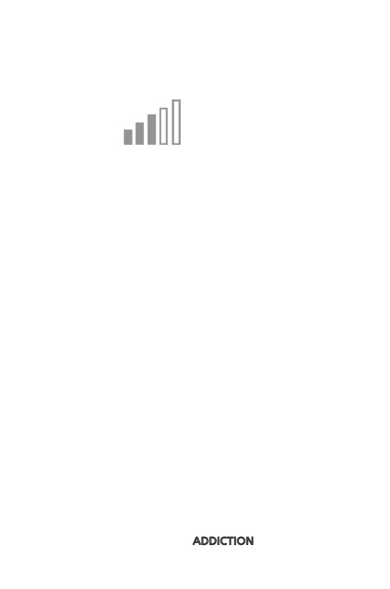
2) Guitar.
Setting
HYPE
As with vocals, there are a lot of different techniques
on the guitar that can be utilized to set hype levels.
Most of the techniques used by vocals can be directly
translated to writing guitar parts (and all other melodic
instruments for that matter). What is often overlooked
though is that the overall level of hype is already deter-
mined before the first note is struck: I’m talking about
picking styles here:
While they influence the general hype level, a guitarist
usually doesn’t switch picks during a song, so knowing
this is of limited use for riding the energy curve. In the
acoustic guitar world however, switching from fingers
to pick half way through a song is quite common and
can thus be used as a tachnique to set different hype
levels as well.
THE ADDICTION FORMULA
139
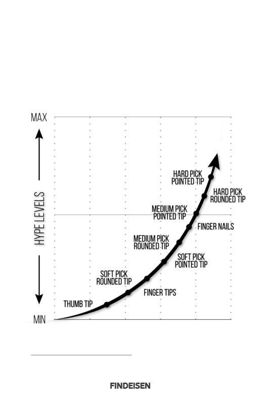
So whether you’re interested in raising the general hype
level or riding the energy curve, it’s good to know that
there are plenty different sizes and shapes to go with
and what influence they have on your energy - it’s your
pick 1:
1 The world needed another pick joke.
140 FRIEDEMANN FINDEISEN
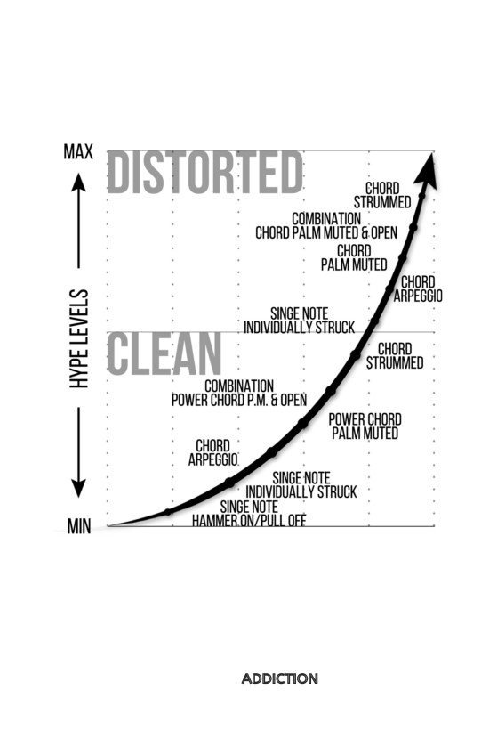
Guitar Modes.
The biggest influence a guitarist has on hype is through
what they actually play:
Examples.
DISTORTED: Chord (Strummed): Linkin Park
-
Crawling (chorus); Combination Chord Palm Muted &
THE ADDICTION FORMULA
141
Open: Green Day - Basket Case (first verse), Fall Out Boy
- Thnks fr th Mmrs (second verse); Chord (Palm Muted):
Avril Lavigne - Sk8er Boi (verse), Element Eighty - War;
Chord Arpeggio: Bryan Adams - C’mon, C’mon, C’mon
(chorus); Single Notes (Individually Struck): Sum 41 -
We’re All To Blame (intro);
CLEAN: Chord Strummed: Oasis - Wonderwall; Com-
bination Power Chord Palm Muted & Open: Seether
- Love Her (verses); Power Chord (Palm Muted): Avril
Lavigne - I’m With You (Verse), Wheatus - Teenage Dirtbag
(prim. bridge); Chord Arpeggio: Pink - Sober (verse), Avril
Lavigne - Nobody’s Home (intro); Single Notes (Individu-
ally Struck): System Of A Down - Toxicity (intro); Single
Notes (Hammer On / Pull Off): Bryan Adams - C’mon,
C’mon, C’mon (intro).
Listen to Steve Vai’s Tender Surrender for a moment 1 - I
know, that hair! - to hear a lot of these in action, includ-
ing thumb tip (0:33), nail (0:42) and pick playing (1:22).
Notice how subtly he switches between clean and dis-
torted sounds (2:00, 3:57)? How he controls hype by
going through various dynamics, subdivisions, ranges
and playing styles?
1 You can find it on Steve’s youtube channel SteveVaiHimself.
142 FRIEDEMANN FINDEISEN
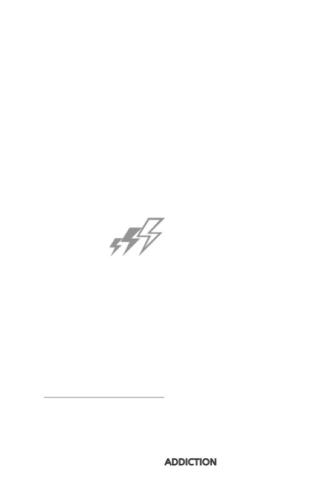
This performance showcases Steve’s true mastery of
energy, slowly building towards his moment of gratifi-
cation in the middle of the piece and slowly going back
down again.
Effects.
We will discuss effects when we talk about Producing,
because they too can be used to express our energy
curve.
using
tension
Tender Surrender also uses pretty much all types of tension
that are possible on guitar: Palm mutes (1:47), different
kinds of vibrato (clean 1:25, distorted 2:03 & 2:37, tremolo
bar vibrato 2:53, 3:30), tremolo bar drops (3:06) and squeals
(3:14), slow bends (3:34), pick slides (3:53). The only ones
missing are the slide, harmonics, fades and the chug 1.
1 Eminem - Cleanin’ Out My Closet (slide at 1:12), Linkin Park -
Crawling (harmonics at 0:25), Evanescence - Bring Me To Life (fade at
0:28), Avril Lavigne - Losing Grip (chug at 2:43)
THE ADDICTION FORMULA
143
One playing style that is particularly interesting for cre-
ating tension on guitar is palm muted playing. Rest-
ing the flesh of his hand on the strings, the guitarist
can control how much he wants to mute the strings. By
slowly taking off the hand, a natural crescendo occurs
and the sound becomes more open and legato 1. This
is the exact equivalent to slowly opening a hi hat on
drums.
Note that once a guitar is distorted, its dynamic capa-
bilities are very limited due to the compression of the
distortion. Using palm mute crescendos is an excellent
way of making up for this shortfall.
imply
tension
Palm mutes.
Palm mutes also sound great when kept closed. They
sound very thick and abrupt and can be used to create
implied tension 2.
1 System Of A Down - Toxicity (build-up to chorus, around 1:13)
2 Deftones - You’ve Seen The Butcher (intro)
144 FRIEDEMANN FINDEISEN
Slides.
Slides can also be used to imply tension if used multi-
ple times in one section 1.
Drones.
This is especially popular in metal and ethnic music.
Here, the guitarist structures their riffs around a low
open string (similar to a pedal). This sounds very sinister
and dark but can have some very hypnotic qualities 2.
Summary:
✓✓
Hype can be altered through dynamics, picking
styles, guitar modes, range, variety and effects.
✓✓
Tension can be introduced by using crescendos,
palm mutes, vibrato, tremolo bar drops, squeals,
slow bends, pick slides, slides, harmonics, fades and
the chug.
✓✓
To imply tension, use palm mutes, slides or drones.
1 Limp Bizkit - Rollin’ (verse & chorus)
2 Deftones - Sex Tape (verse), Tool - Vicarious (e.g. 2:47)
THE ADDICTION FORMULA
145
3) Bass
Setting
HYPE
Bass Modes.
Let’s look at the hype levels first:
146 FRIEDEMANN FINDEISEN
Examples.
Slap: OutKast - Ms. Jackson (0:43), Jordin Sparks - One
Step At A Time (chorus); Chord Picked: Red Hot Chili
Peppers - Don't Forget Me; Single Note Picked: Alex Clare
- Up All Night; Chord (Plucked): Red Hot Chili Pep-
pers - Hey; Single Note Plucked: Robin Thicke - Blurred
Lines (feat. T.I. & Pharrell); Single Note (Palm Muted &
Plucked): MAGIC! - Rude; Single Note (Hammer On
/ Pull Off): Red Hot Chili Peppers - Around The World
Distortion
Distortion adds a whole new level to these hype levels,
meaning that even the highest clean hype level doesn’t
sound as big as the lowest distortion level.
using
tension
The bass is a little more limited when it comes to ten-
sion as most of the techniques discussed in the chapter
on guitar don’t sound as good on thick strings. The most
common technique of creating tension is the slide 1.
1 Red Hot Chili Peppers - Scar Tissue (0:10)
THE ADDICTION FORMULA
147
imply
tension
Slides.
Just as on guitar, using slides multiple times in a section
can be used to imply tension 1.
Drones.
By playing a continuous drone some of your chords
will start creating friction. This technique can thus be
used very effectively to imply tension 2.
Summary:
✓✓
Hype can be controlled through dynamics, range,
variety, changing bass modes and distortion.
✓✓
Tension can be added by using crescendos or slides.
✓✓
To imply tension, slides or drones can be used.
1 Pharrell Williams - Marilyn Monroe (verse)
2 Katy Perry - I Kissed A Girl (chorus), Mudvayne - Pulling The String
(intro), Portishead - Machine Gun
148 FRIEDEMANN FINDEISEN
4) Piano & Synthesizers
Compared to the other instruments, the piano is the
most neutral when it comes to energy. It really only has
one sound - that of a hammer striking a string. So we
will include synths in this chapter as well.
Setting
HYPE
We have already discussed the most important hype
features of the piano in other parts of this book. They
are dynamics (page 131), ranges (page 135) and rhythm
(page 124) .
Sustain.
The only popular instrument-specific technique of the
piano is using the sustain pedal: It opens up the sound
and thus lifts the section to a new hype level.
Filters.
The hype of synthesizers can often be set with low pass
filters - the lower the cut-off, the lower the hype.
THE ADDICTION FORMULA
149
using
tension
There is no tension on piano. I’ve heard some alterna-
tive tracks where the sustain pedal was held in order to
blend successive chords, thereby creating some sort of
cluster chords, but it is a rarity.
In the case of synthesizers, the cut-off frequency of the
low-pass filter can be automated to slowly open up 1.
Summary:
✓✓
Hype can be controlled by means of dynamics,
range, variety, sustain and filters.
✓✓
Tension can be applied by changing the cut-off fre-
quency of the filter.
1 Ariana Grande - Break Free (feat. Zedd, first verse), Jennifer Lopez -
Live It Up (feat. Pitbull, intro)
150 FRIEDEMANN FINDEISEN
5) Drums
Drums are your most powerful instrument for control-
ling energy, period. They like no other can set your
hype levels and introduce tension, so studying groove
is extremely valuable for any songwriter. Bringing in
drums half-way through a song is one of the most im-
pactful moves in the world of songwriting ever since
Led Zeppelin’s Stairway To Heaven and Phil Collin’s In
The Air Tonight. So let’s talk instruments. There are 4
parts a drummer can play simultaneously, one for each
limb (2 legs, 2 arms). This translates to:
Left arm: Snare right arm: Time
Left leg: hat pedal Right leg: Kick
THE ADDICTION FORMULA
151
Obviously, there are more possibilities than these if
you take patterns played with both hands, not to men-
tion special pedals into account, but as you will see, this
won’t really matter for our discussion. This is because
we are not interested in the amount of notes played
on an instrument in this chapter (we covered this in
the chapter on rhythm), just which instruments we can
hear in general.
Setting
HYPE
Drum Modes.
At the moment, we are only discussing “full” beats,
meaning beats involving a kick drum, snare drum and
time in the right hand. To be more specific, we are es-
pecially interested in the right hand, because it will de-
termine our hype level the most.
So here are the different hype levels on drums you need
to know as an arranger:
152 FRIEDEMANN FINDEISEN
*rare in pop music
EXAMPLES.
Crash: Sum 41 - Fatlip (chorus); Hi Hat (Open): Sia -
Elastic Heart (first half of chorus), Foo Fighters - The Pre-
tender (second verse); Toms: Sia - Clap Your Hands, P.O.D.
- Youth Of The Nation (chorus), System Of A Down - Chop
Suey (intro); Hi Hat Combo (Open & Closed): Pink - So-
THE ADDICTION FORMULA
153
ber (chorus); Hi Hat (Closed): Justin Timberlake - What
Goes Around… Comes Around, Usher - Climax (verse), Sum
41 - Fatlip (verse); Ride: Foo Fighters - The Pretender (cho-
rus), KoRn - Blind (intro); Rims: Alex Clare - Too Close (verse)
Intermediate steps can be reached by involving an in-
strument that’s higher in hype, e.g. an open hi hat beat
with an added crash has a higher hype level than with-
out the crash. Adding instruments from a lower hype
level usually sounds weak, e.g. playing a tom groove and
adding a ride on the downbeat. This rule does not in-
clude fills or any other type of tension building, of course.
Rims.
There are two other important sounds on the snare
drum that have an influence on hype: The rim click
(a.k.a. cross stick or side stick) and the rim shot. The
rim click lowers the hype level of the drum groove, the
rim shot increases it.
Snares Off.
This way of playing is often heard in Raggae music.
With the snares disengaged, the snare drum sounds
more like a tom-tom, which dramatically decreases its
154 FRIEDEMANN FINDEISEN
hype level. This can be compared to going from dis-
torted guitar to clean guitar. Using the snares to set
hype levels is rarely used in pop music, but very musi-
cal and effective 1.
using
tension
Changing Modes.
Tension again may be achieved by either involving new
instruments half way through a section such as fills on
toms, crashes, snare rolls, cymbal rolls 2 or by dropping
out the drums entirely 3. Another great way is to gradu-
ally open the hi hat or to gradually move from the bell
of the ride outwards (going from a “ping” sound to a
washed out crash sound) 4.
1 Mr Probz - Waves (snares on at 1:18)
2 Junkie XL - A Little Less Conversation (feat. Elvis, tom fill at 1:26), JAY
Z & Alicia Keys - Empire State of Mind (crashes at 1:06), B.o.B - Air-
planes ft. Hayley Williams (snare fill at 0:29), Sean Paul - Got 2 Luv U...
(feat. Alexis Jordan, cymbal roll at 1:35), Eminem - Till I Collapse (cymbal
roll at 0:27)
3 Lorde - Team (drums drop out at 1:02), B.o.B - Airplanes (feat. Hayley
Williams, drums drop out at 0:51 & 1:09)
4 Limp Bizkit - Rollin (hi hat starts opening at 0:17), Finger Eleven - ...
THE ADDICTION FORMULA
155
imply
tension
We have already talked about a multitude of ways of
creating implied tension in the arrangement section of
this book. The basic rule is: Give your audience only
part of what they want. In the case of the drums, this
translates to giving them an incomplete beat that is
missing either its bass drum, snare drum, time or com-
binations of the three.
There are 3 additional grooves I want to briefly men-
tion that imply tension to your music:
Half-Opened Hi Hat.
We are so used to the sound of the hi hat gradually
opening up - thus going somewhere - that we instinc-
tively associate the sound with tension, even if the hat
doesn’t actually open up any further.
Paralyzer (hi hat opens at 0:50)
156 FRIEDEMANN FINDEISEN
Tom Grooves.
These we know primarily from drum solos - and since
those always end with a big bang our anticipation is
high here as well.
Snare Drum Grooves and Rolls.
These work for similar reasons as the previous 1. They
feel like a long snare drum fill. It’s not a coincidence
that snare drum rolls are used in circuses to introduce
tension. We all know that at the end of the roll the lion
will jump the hoop. Weird, innit?
Summary:
✓✓
Hype can be altered through dynamics, variety,
drum modes, rims and by disengaging the snares.
✓✓
Tension can be applied by changing modes or
through crescendos.
✓✓
To imply tension, use half-opened hi hat grooves,
tom grooves or snare drum grooves and rolls.
1 Ke$ha - Die Young (snare drum grooves at 0:22 and 0:30), Linkin Park
- Until It’s Gone (snare drum roll at 1:01), Mr Probz - Waves (snare drum
roll at 0:56), Beyoncé - Run The World (Girls, combinations of snare drum
grooves and rolls throughout the entire song)
THE ADDICTION FORMULA
157
So we’ve talked about arrangement, harmony, rhythm
and part-writing. Now it’s time to take a look at lyrics
and how they can be used to represent your energy
curve.
158 FRIEDEMANN FINDEISEN
Lyrics
Music and lyrics are not separate entities. Lyrics - just
like any other element of songwriting - are a tool to
control your energy curve. We have already discussed
the important role of vocals in hit songs, now it’s time
to look at what these vocals could be singing about and
- even more importantly - how they sing about it.
Just like all the other elements, lyrics have periods of
anticipation and moments of gratification. In other
words, they, too, can be used to set hype levels and
build tension.
Another key mistake writers make is that they write
their music and lyrics independently. This is not a prob-
lem per se, but it becomes a problem if their energy
levels don’t match up. Music and lyrics need to follow
THE ADDICTION FORMULA
159
the same energy curve or they will not fit.
Examples.
Take a look at the following (unrelated) lines:
Shut up and listen to me
Everybody put your hands up
I met her at a concert
His hands wrinkled and grey
See how these have different hype levels? The first two
lines would sound really strange in a section of low
hype and the last two wouldn’t work in a high-energy
setting.
The primary bridge of Rebecca Black’s Friday (“Yester-
day was thursday…”) is a great unintentional example
for energy levels not matching up. Here, the tension
builds and builds whereas the lyrics peter out in banali-
ties. It’s the equivalent of a clown riding a tiny bike.
Having different elements of your song say different
things is a huge trap to fall into. Make sure your music
and lyrics tell the same story and start seeing lyrics as a
160 FRIEDEMANN FINDEISEN
part of the music instead of as a separate entity 1. Start
seeing lyrics as simply another instrument that has dif-
ferent sounds and techniques you can use to alter your
energy curve.
Before we get into how to set hype and tension, there
is a concept we need to talk about that becomes very
important in lyric writing:
Power Positions.
Certain moments in your song provide better opportu-
nities for storytelling than others. These moments are
called power positions because they give whatever lyric is
there higher status.
So where are those power positions? The most obvious
are choruses and highest overall notes. They are the
most impactful and memorable moments of your song,
so it only makes sense to put some fantastic lines here.
But what about the rest of the song? Are there other
less obvious power positions we can use? The answer
1 In fact, having music and lyrics go in completely different direc-
tions is a great technique if you do comedy. Weird Al, anyone?
THE ADDICTION FORMULA
161
goes back to the Golden Mean.
A quick reminder: The golden mean or 1-2-3 rule says
that after you have introduced something, repeat it
once, then change it. Why can we use this rule here?
Because it shows the critical moments of change in our
song and change always calls attention to the music.
That means that the lines in these positions are more
valuable than others. So let’s look at one of these gold-
en mean lines here:
Notice that it has a three distinct features: A beginning,
a mark at around two thirds of the distance between
the two and an end. These 3 moments (nodes) are power
positions - they either introduce a new section, intro-
duce something new or round off the section. So in a
verse - verse - pre-chorus scenario, your power posi-
tions are the first line of the verse, the last line of the
verse (or the first line of the pre-chorus) and the last
line of the pre-chorus:
162 FRIEDEMANN FINDEISEN
Let’s look at our hollywood structure as an example:
According to this, the power positions are:
ӹӹ
First line of first verse
ӹӹ
First line of pre-chorus / last line of first verse
ӹӹ
First line of first chorus / last line of pre-chorus
ӹӹ
First line of second verse / last line of first chorus
ӹӹ
First line of second chorus / last line of pre-chorus
ӹӹ
First line of prim. bridge / last line of second chorus
ӹӹ
First line of last chorus / last line of prim. bridge
ӹӹ
Last line of last chorus
But the little graph above also shows us which power
positions are the most valuable. Looking at how many
nodes coincide in one place, it becomes obvious that
the most powerful position is the first line of the pri-
mary bridge / last line of the second chorus (with 3
nodes). This is followed by the very first and very last
line of the lyrics (2 nodes). In other words, these lines
THE ADDICTION FORMULA
163
happen at the most memorable and spectacular mo-
ments of your song and thus provide the best opportu-
nity for a strong line.
So we have identified our strongest power positions
(and using the 1-2-3 rule is an excellent way of doing
this if you’re ever in doubt about a structure), now it’s
time to talk about how to make the best use of them.
Setting
HYPE
It should be said that lyrics have only little influence on
a song’s hype level. Unless you use extremely power-
ful words, they will usually adapt more or less to your
songs energy curve.
But anyways, setting hype through lyrics is done by us-
ing scope and power words.
Scope refers to how specific or general something is.
Specificity is low hype, big picture stuff is high hype. If
specificity is what you want, describe what you see or
what you feel as something’s happening. Go into detail,
164 FRIEDEMANN FINDEISEN
talk about the smaller things in life, tell a story. If you
want to go big, explain, summarize, reveal. Go meta 1.
Power Words can be used to raise hype. Songwriters are
always on the lookout for these. Madonna did it with
the word “virgin”, Beyoncé did it with “ring” and Lady
Gaga did it with “paparazzi”. All of these are words ei-
ther evoke a strong emotional reaction (anything from
“you can’t say that! what are the kids gonna think?” to
“that sums up exactly how I feel”) or have a deeper
meaning (Beyoncé’s “ring” is a metaphor for marriage
and honesty). Power words can also reflect the artist’s
image 2 or the zeitgeist 3.
Have you heard of Pareto’s principle? 20% of your ef-
forts produce 80% of your results. Your power words
are those 20%! People will forget the rest of your lyrics,
but power words prevail. So when writing lyrics, spend
1 Beyoncé - Single Ladies (verse: specific, chorus: explanation), Big Sean -
Beware (feat. Lil Wayne & Jhené Aiko, verses: specific, chorus: message)
2 “Single ladies” reads girl power, Gaga’s “poker face” is used syn-
onymously with playing hard to get
3 Katy Perry - I kissed a girl (LGBT movement), Lady Gaga - G.U.Y.
(bottom power, feminism), Beyoncé - XO (generation of internet relationships),
Wheatus - Teenage Dirtbag (high school), Bee Gees - Night Fever (disco era)
THE ADDICTION FORMULA
165
more time on your key power words than on anything
else. Judging from the lyrical quality of the verses of
even hit songs, this is what the pros do, too. Put power
words in power positions and your lyric will become
irresistible.
using
tension
This is where lyrics really can shine. Since they are the
only element that can tell a literal story, all the same
techniques can be used for creating tension as in po-
etry, novels and screenplays.
There are two big ways in which to work some tension
into your lyrics: Contentual Tension and the less known,
although much more effective Structural Tension.
Contentual Tension
This type of tension has to do with what you’re saying.
Since it is purely logical (your listener has to make an
effort to follow and understand the lyrics), it isn’t as
strong as Structural Tension. Since it’s not used a lot in
pop music, we will go through this rather quickly.
166 FRIEDEMANN FINDEISEN
Telling A Story. This technique is a little dated. It pops
up here and there every once in a while, especially in
country and folk music but is rarely seen in pop. Ex-
amples might be Eminem’s Stan, Paramore’s Brick By
Boring Brick, Flyleaf ’s Cassie or Alanis Morissette’s Your
House. This approach to writing lyrics is more textbook
than practice, almost to a degree where there are more
books on the technique than hits actually using it. It
can be a lot of fun though and is one of the more in-
spiring methods for writing lyrics (compared to “let’s
think of more ways to tell my boyfriend he’s special
without sounding sappy or corny”).
Cliffhangers. Cliffhangers are a technique borrowed from
TV writing where you either introduce a major change
of events (“He was a horse the whole time!”), a ques-
tion (“How did he know we were coming?”) or cut off a
chain of events (“The secret of Blackmoore castle lies
behind this door. Let’s open it next week!“) at the end
of the episode to make sure people tune in again.
The same thing can be done with lyrics: You are looking
for lines that are going somewhere, lines that build ten-
THE ADDICTION FORMULA
167
sion. So find a line that either surprises (high tension) 1,
creates interest 2 (medium tension) or leads nicely into
the next section 3 (low tension).
Structural Tension
Traditionally, lyrics are written in blocks of 4 lines each,
with one block per section. This is usually a pretty safe
technique that helps with rhyming and flow.
The problem with this approach is that blocks are pre-
dictable: We know when they start, we know when they
end and we know there’s gonna be another block just
like it right after. Writing in blocks has a certain sound
that, if not used with care, can sound cliché, flat or
one-dimensional.
The following techniques can help you loosen up your
block writing in order to introduce some structural ten-
sion to your lyrics.
1 Prim. Bridges of Beyoncé’s If I Were A Boy and Single Ladies (Put A
Ring On It)
2 First lines of Katy Perry’s Unconditionally
3 Last lines of the verses in Eminem’s Monster (feat. Rihanna)
168 FRIEDEMANN FINDEISEN
Use Pickups 1. Having a vocal line come in a couple of
notes before the new section starts creates strong antici-
pation and can therefore be used to introduce tension.
Split Lines. A technique I learned from public speak-
ers is splitting lines: Instead of taking a pause at the
end of every sentence, they take their pauses half way
through. This way, they can already think of what to
say next, thus keeping the show going and at the same
time they’re creating tension - we all want to hear the
thought brought to its completion. If we don’t do this
See? You can use this technique for your songs, too. For
example, split up the last line of your verse and finish
it in the pre-chorus. So instead of going “Girl, I don’t get
you” try “You know I (pause, new section) just don’t get you”.
The longer the pause the stronger the tension 2.
Ouroboros Melodies. The ouroboros is an ancient symbol
of a snake biting its own tail. You have probably never
heard of this technique before and that is a) because I
1 Miley Cyrus - Wrecking Ball (0:41), Justin Timberlake - Cry Me A
River (chorus), Ke$ha - TiK ToK (chorus)
2 Jhené Aiko - The Worst (0:43)
THE ADDICTION FORMULA
169
came up with the name and b) because it’s extremely
rare. So rare that I wouldn’t have put it in this book,
but this is just too awesome not to be shared. This is the
kind of stuff that really gets me excited 1.
The idea is to move the lyrical blocks in relation to the
music:
The amazing thing about this technique is that your
music and lyrics dovetail into each other, thereby work-
ing together to guide your listeners attention through
the song 2. Ouroboros Melodies. Give it a try.
1 That and Pretzel day.
2 Staind - Failing (verse)
170 FRIEDEMANN FINDEISEN
imply
tension
Implied Tension in lyrics can again be divided into two
parts, contentual and structural, and again structural
implied tension is the stronger of the two as it can be
felt regardless of whether your audience is listening to
the lyrics or not.
Contentual Implied Tension
Tension can be implied by writing lyrics that contrast
the music. This could mean either writing low-energy
lyrics to a high-energy section or putting high-energy
lyrics to a low-energy section.
Contrasting Low-Energy Music. Setting a big message
against rather small music can be very powerful. This
is often used in politically critical songs 1 (here, it sounds
honest and brutally real) or when writing about vio-
lence or pain 2 (sounding detached).
1 Nena - 99 Luftballons, A Perfect Circle - Annihilation
2 Pink - Family Portrait, Seether - Given (verse), Nirvana - Rape Me (in-
tro), Papa Roach - Broken Home (intro), and many more very disturb-
ing metal songs.
THE ADDICTION FORMULA
171
Contrasting High-Energy Music. This creates a disconnect
feel from the music and can be used to imply boredom
or apathy 1.
Structural Implied Tension
Unbalanced Or Asymmetric Phrasal Structuring 2. Going back
to our 4-line blocks, realise that you don’t have to write
lyrics in blocks of 4 lines each. Try writing 3 or 5 lines
per block and see what effect it has on the section.
The idea is to write more freely over a section, to break
free from the tedious “one line every two bars” stand-
ard. Listen to the first verse of Zendaya’s Replay where
she uses this technique. Very cool, don’t you think 3?
Once you understand this technique, you will be able
to look at a lyric sheet from across the room and still be
able to tell whether it has this type of tension built into
it. Let’s try it right now: Which lyric has more tension?
1 Stromae - Alors On Danse
2 Perricone, J. - Melody In Songwriting (Berklee Press, 2000)
3 Clean Bandit - Stronger (second verse), Rihanna - Happy (chorus),
Justin Timberlake - Tunnel Vision (verses)
172 FRIEDEMANN FINDEISEN
Split Lines. A split line doesn’t have to span two sections,
it can also happen within a single section to imply ten-
sion. Again, the technique is to take pauses in the mid-
dle of your lines 1.
the hollywood structure.
Now that we’ve looked at setting hype and tension, let’s
go through our hollywood structure and see what we
can do specifically in every section:
The Intro. This is often instrumental, so there are rare-
1 Jhené Aiko - The Worst (verses), Staind - The Way I Am (chorus),
Adele - Someone Like You (first verse)
THE ADDICTION FORMULA
173
ly any lyrics to be written for this section. You might
however instruct the singer to improvise here (“aw yeah
yeah”, “you know what time it is”, “you ready?”), although
this seldomly contributes to your story. It does however
tell us a little bit more about the mood that the song
will be in and it introduces the vocals as soon as possi-
ble, which gives the audience something to hold on to.
The First Verse. Here we introduce our characters. Your
first line is important (power position) - make sure to
write something that grabs your audiences attention
right away.
As we have learned, verses are generally a good mo-
ment for descriptions. The key is to really go into detail
of what is going on. Nobody wants to hear that your
girlfriend has the prettiest eyes. Tell us something spe-
cific, let us take a peek into your life - then and only
then we might believe you 1.
I wrote a song once that started out with the lines:
1 Alex Clare - Up All Night, Lorde - Royals, Beyoncé - Single Ladies
174 FRIEDEMANN FINDEISEN
I still make coffee for two
I’m not used to you not being around
I can’t sleep at night because of you
but then again, might be the coffee, too.
See how that’s much more interesting than “I miss you
baby”? Verses. Get specific. Oh, and don’t ever start a
verse with “I’ve been walking through the streets/city”
or “Woke up this morning”. I will find you. It will not
be pretty.
First Pre-Chorus. This will be just one or two lines that
lead us nicely into the chorus. If you didn’t already in-
troduce your inciting incident in the first verse, then
this is the moment.
First Chorus. Contrary to the verses, you want your cho-
rus to be multi-faceted. The bigger the scope of possi-
ble interpretations, the better. No time for details here,
this is big-picture stuff. So why is this important?
✓✓
It brings depth to your lyrics, thereby making your
text 3-dimensional. And as we know from arrang-
ing, anything that makes your big sections bigger is
THE ADDICTION FORMULA
175
invaluable for creating moments of gratification.
✓✓
The more ways your song can be interpreted, the
more it will mean to different people. Take the line
“You are gone” for example. It speaks to people who
were dumped by their significant other, but it also
reaches out to those who have recently experienced
a death in their life 1.
✓✓
With multiple interpretations for your chorus you
can actually set each of them up with your verses,
thereby changing the meaning of the chorus every
single time. This gives each chorus a unique, new
color.
The Second Verse. Ah, yes. The time I have spent on
second verses in my life. There was nothing I strug-
gled with more than finding something new to say in
verse 2. But as I found out through many years of trial-
and-error, you actually have a lot of options here, and
they all depend on what you did in the first verse. This
makes it necessary to plan your lyrical structure before
you start writing.
1 Just like “Left behind” speaks to people who have been deserted
in the past and additionally satisfies the huge market of music en-
thusiasts with multiple asses.
176 FRIEDEMANN FINDEISEN
✓✓
If you started telling a story in verse 1, keep going.
Don’t cram your entire trip to Nicaragua into one
verse, take your time. Make us feel like we’re there
in verse 1, tell us what you did in verse 2.
✓✓
If you wrote about a certain problem, go deeper, tell
us how it affects you and what it means to you. If
your text is about how your significant other snores
in their sleep, drill down in the second verse. You
can’t sleep, you get annoyed at them, you have a
strained neck from sleeping on the couch - blow up
the problem.
✓✓
Set up a new interpretation for the chorus. You have
two options here:
Option 1 is to tell completely unrelated stories in the
verses that introduce a new point of view to the main
line:
Verse 1: The Petersons have a nice family lunch together and
play board games together.
Chorus: Oh Sunday, best of days.
Meaning: What a beautiful day to be with your family.
THE ADDICTION FORMULA
177
Verse 2: Mike Smith watches TV and drinks beer in his
Superman underwear.
Chorus: Oh Sunday, best of days.
Meaning: What a great day to do nothing.
Option 2 is somewhat harder to pull off. It’s about tell-
ing a continuous story:
Verse 1: Missed the bus to work, got splashed, went back
home to change and realized I had no clean clothes.
Chorus: Life works in mysterious ways sometimes.
Meaning: It seems unfair.
Verse 2: Went to buy a new shirt and ran into this beautiful
woman who also had gotten splashed.
Chorus: Life works in mysterious ways sometimes.
Meaning: A bad thing can turn out to be a good thing
in hindsight.
178 FRIEDEMANN FINDEISEN
In both cases, the process is to think of a multi-faceted
line for the chorus first, then see how you can setup dif-
ferent ways of leading into it to allow for these different
interpretations.
It’s often a good technique to zoom out for the sec-
ond verse. Go from the mundane to the magnificent,
from one person to the world, from experience to les-
sons learned. This way, you establish the second verse
as higher in energy than the first.
The Second Pre-Chorus. This may be the same as pre-cho-
rus 1 or it may be different - your choice. The same
rules apply.
The Second Chorus. Usually, choruses 1, 2 and 3 have the
same lyrics. You can change them if you want to, but
you are losing your repetition. And we like repetition.
And we like repetition. As we have seen in this chapter,
just because all the choruses have the same lyrics does
not mean that they also all represent the same message.
The Prim. Bridge. You can see the primary bridge as a
way of continuing your story from before or you follow
THE ADDICTION FORMULA
179
the energy curve and introduce an element of surprise
here.
This can be anything from changing your writing tech-
nique (e.g. by going from sung lyrics to rapping) 1 to
turning the whole situation around (the “Sixth Sense”
approach) 2. As always, the prim. bridge is a good mo-
ment to get creative.
The Third Chorus. The same goes as for Chorus #2.
The Fourth Chorus. As already discussed earlier, you can
change the lyrics here if you want. Use them to really
drive your point home.
Ending. Depending on what you’re doing, you have the
option of adding some lyrics here. If you’re going back
to the beginning musically, do the same with the lyrics.
If you’re ending on a high energy level, make sure the
lyrics reflect that. If you’re cutting out of the song rath-
1 Katy Perry - Dark Horse (feat. Juicy J), Justin Bieber - Beauty
And A Beat (feat. Nikki Minaj)
2 Beyoncé - Single Ladies, If I Were A Boy
180 FRIEDEMANN FINDEISEN
er abruptly, think about bringing this idea back lyri-
cally.
If you’re fading out your song, consider ending on free
lyrics (“yeah”s or slight alterations of your chorus).
Summary:
✓✓
Power positions are certain moments in your song
that give whatever lyrical line is there a lot of power.
✓✓
Hype can be controlled with scope and power words.
✓✓
Tension can be applied with contentual tension (by
telling a story or using cliffhangers) or structural ten-
sion (pickups, split lines and ouroboros melodies).
✓✓
Tension can be implied contentually (setting low
energy lyrics against high energy music and vice-
versa) and structurally (using unbalanced or asym-
metric phrasal structuring or split lines).
✓✓
Keep your verses specific and detailed, go big-pic-
ture and multidimensional in your choruses.
THE ADDICTION FORMULA
181
Production
Production is huge and it’s getting bigger and bigger.
As a modern songwriter you absolutely have to be able
to produce your own stuff, even if it’s just for demo
purposes. This is not just a commodity anymore. You
can’t sell sheet music. There is a certain standard for
how your music has to sound and if you don’t deliver
you don’t stand a chance.
So I think we have to make an important distinction
here as that term “music production” has come to
mean so many different things. We will not be talking
about mixing or mastering technique here. The music
production I will be talking about in this book is a crea-
tive one - using effects and sound design to tell your
story and ride the energy curve.
182 FRIEDEMANN FINDEISEN
Music production is finding its way into songwriting.
We have entered an era of sound design, to a degree that
most new songwriters these days know more about
compression than arrangement. The old songwriting
rule “It’s not a good song if it won’t work on piano” no
longer applies. Just think of rap, metal or dance music.
The writing and the whole production process have be-
come one.
In this chapter, we will look at how production can be
used creatively to help us ride our energy curve.
Setting
HYPE
Production as a tool for setting hype ranges from ex-
tremely subtle techniques to major changes in sound.
I want you to see the following techniques in the same
way as when we looked at different vocal modes or gui-
tar playing styles. Do this and you will see that creative
production really isn’t that different from all the other
songwriting elements and that you already know most
of the techniques in some shape or form. So here they
are:
THE ADDICTION FORMULA
183
Fattening / Thinning Out.
This includes Layering, Compression, Filter, Chorus and Dis-
tortion. It’s simple, really: The thicker your instrument,
the higher the hype and vice versa. Layering and com-
pression are similar to doubling a part, filters can be
compared to thinning out our texture through arrange-
ment and distortion we have already discussed when
we talked about vocals, bass and guitar effects.
Perceived Volume.
I’m refering to Compression and Volume Automation. Hype
- as we have learned when we talked about parts - can
be controlled by volume. For example, pulling down
your verses a couple of decibel (thus decreasing its hype
level) gives your chorus some additional lift.
Dimension / Space.
This includes Stereo Enhancing Effects, Reverb and Delay 1.
Dimension is interesting as really there was no way
before music production to use it as a means to con-
trol hype. The rule is this: The wider an instrument is
spread and the closer it is to the listener, the higher its
1 Leona Lewis - Bleeding Love (getting wider & deeper at 0:56)
184 FRIEDEMANN FINDEISEN
hype level will be. Reverb is slowly making its way back
into mainstream as I write this, but part of the reason
it was “out” for a while is because it lowers hype con-
siderably.
Remember that space is relative, so if all your instru-
ments are dry your mix will still sound low in hype - you
need some wet instruments in the back to make your
dry instruments jump forward. Similarly, if your entire
song is wide, your chorus won’t stand out as much.
New Instruments.
You could add new instruments such as Pads, Percus-
sion, Synths and Samples. You might actually completely
change the arrangement by adding new instruments
and thus enlarging the texture. This of course leads to
an increase in hype. Be careful about this technique: I
have found myself more than once adding instruments
to a verse to make it sound better (as in: fuller, prettier)
while forgetting that as a side product, I was also in-
creasing hype. The result was that my chorus sounded
tiny in comparison. So always listen to your enriched
section in context - can you still hear the energy curve?
THE ADDICTION FORMULA
185
Processing.
Any effect can increase hype if applied noticeably. This
includes glitchy effects as in the intro to OutKast’s Ms.
Jackson, distortion like in the bridge to Taylor Swift’s
Shake It Off, delays as on the guitar in U2’s Where The
Streets Have No Name, low pass filters modulated by an
LFO (wobble) as on the bass in Alex Clare’s Too Close,
tremolos as in the verse to Audioslaves Gasoline, side
chaining and on and on and on. As you can see, most
of these techniques bring the subdivision of the instru-
ment to a higher level, which results in an increase of
hype.
using
tension
Production is used excessively to introduce tension to
music. This can go from barely noticeable to very obvi-
ous and everything in between - all the fine tuning is
under your control. There are two important ways of
introducing tension: Automation and Sound Effects (SFX).
Automation.
All the effects above can be automated to introduce
tension to a mix:
186 FRIEDEMANN FINDEISEN
Fattening / Thinning Out 1. For this technique, additional
layers are slowly faded in, the threshold of a compres-
sor is gradually increased to let more punch through,
the cut-off frequency of a filter is automated or the
wet/dry knob of your favorite distortion or chorus pl-
ugin is slowly opened up.
Perceived Volume 2. By slowly increasing the volume of
an instrument, the producer is mimicking a crescendo,
which as we know introduces tension. For the first time
in history, volume automation allows us to crescendo
any instrument we want, even instruments that nor-
mally aren’t able to do that, such as the organ.
Dimension / Space 3. Tension can be introduced by auto-
mating the dry/wet knob of your reverb or delay or by
changing the wideness of your stereo enhancer. This
1 Ariana Grande - Break Free (feat. Zedd, filter the synth in the verse),
Jhené Aiko - It’s Cool (keep listening to the filter on the snare drum coming in
at 0:56), Katy Perry - Roar (main vocals are doubled at 0:54), Maroon 5
- Moves Like Jagger (filter on guitars in verse & snare at 1:32)
2 Massive Attack - Angel (bass gets louder at 0:51), Mudvayne - Cradle
(the vocals are pulled down at 0:33 to give the next section more impact)
3 Carly Rae Jepsen - Call Me Maybe (getting wider & deeper at 0:24),
LMFAO - Party Rock Anthem (automated reverb at 2:16)
THE ADDICTION FORMULA
187
adds another dimension to your mix and opens every-
thing up.
New Instruments 1. By bringing in instruments half way
through a section, you are again affecting the arrange-
ment.
Processing 2. Gradually changing an instrument’s sound
can be used to introduce tension. This may remind
you of the chapter on vocal effects, where we looked
at how singers can increase tension by changing their
vocal mode or by slowly adding twang to their voice.
Processing is the exact same thing! Think of a new set
of effects you can use to communicate to your listener
how your singer feels.
Sound Effects.
This includes Swooshes, Sweeps, Uplifters, Downlifters and
Reverses 3.
1 Evanescence - Bring Me To Life (guitar at 0:28), Clean Bandit -
Rather Be (feat. Jess Glynne, hi hat 0:40 - 0:48)
2 Massive Attack - Angel (bass 1:05 - 1:34 and back to 1:46)
3 Katy Perry - Firework (uplifter at 1:01 - 1:17), Gnarls Barkley -
Crazy (side-chained uplifter at 0:33), Carly Rae Jepsen - Call Me Maybe...
188 FRIEDEMANN FINDEISEN
Although it doesn’t feel like it in the production process,
this is actually just another sub-point of automation
since most of these are just white noise going through
an automated filter. All of these can be used to control
tension, whether positively (swooshes, sweeps, uplifters)
or negatively (downlifters).
It makes sense to start collecting different sound effects
for your songs in a special folder that you can drag &
drop into your sessions.
imply
tension
Because production is the element which you have the
most control over, it lends itself particularly well for
subtle manoeuvres like this.
I want to share three of my favorite techniques here to
give you an idea of what is possible with production.
(uplifter at 0:24, piano reverse at 1:00), Maroon 5 - Moves Like Jagger
(downlifter at 1:11)
THE ADDICTION FORMULA
189
Low & High Pass Filters.
By noticeably cutting off the low or high end of an es-
sential element to your mix, you are audibly thinning
out the arrangement, which results in the desired im-
plied tension 1.
Auto-Filters.
Since filtering always has an aftertaste of tension, using
auto-filters on an instrument can also be used to create
implied tension. The direction of the cut off isn’t im-
portant here, the important bit is that we can hear that
there is some filtering happening 2.
Vocal Processing.
It is possible to imply tension on the vocals through
effects, such as compression, certain kinds of reverb,
delays or auto-tune. These are all very subtle, but the
tension comes from the fact that we subconsciously no-
tice the difference between what we hear and what we
know a voice is supposed to sound like 3.
1 Kid Cudi Vs Crookers - ‘Day ‘N’ Nite’ (Radio Edit, drum loop at 0:37
- 0:51)
2 Iggy Azalea - Fancy (hi hat pattern at 0:31)
3 Drake - Started From The Bottom (auto-tune, compression), Ace Hood...
190 FRIEDEMANN FINDEISEN
Summary:
✓✓
Hype can be altered by fattening or thinning out
(layering, compression, filters, chorus and distor-
tion), by using dimension / space (stereo enhancing
plugins, reverb, delay), new instruments (pads, per-
cussion, synths, samples) or processing.
✓✓
Tension can be applied by automating all the above
or by using sound effects.
✓✓
Implied tension can be achieved through the use of
high pass filters, auto filters and vocal processing.
- Bugatti (feat. Future, Rick Ross, auto-tune, compression, delay)
THE ADDICTION FORMULA
191
End Of Part II
That wraps up our elements. Glad you’re still with me.
Before we move to part III, there is something we need
to discuss. Even though you might think you’ve learned
a lot from this book already, you really haven’t learned
a thing until you’ve used what you learned. To put it
bluntly: Knowing something isn’t worth shit.
This book will be useless to you if you don’t set yourself
clear goals of using the techniques you have learned
in this book. Start with three new techniques in every
song you write from now on. Otherwise you will get
stuck where you are right now for the rest of your life.
That’s just how our brain operates: We don’t remem-
ber anything unless we hear it repeatedly.
So I suggest going through all the techniques again and
highlighting anything you haven’t used before. And
then try ‘em out! Even if you don’t like the example
songs showcasing the technique, figure out a way of
making them work for you. You could be the first to
192 FRIEDEMANN FINDEISEN
ever use one of these in a completely new way.
After learning about all of these techniques, now it’s
time for you to come up with some of your own. In
part 3, we will look at how to create new techniques
you can use in your songs today (this is the only song-
writing book in the world that teaches this). Having a
unique set of writing tools is a huge, huge step in the
direction of a sound that stands out. The techniques in
this book are really just the beginning. Can you write
a hit song with what you’ve learned so far? Absolutely.
But if you want to take your songwriting to a whole
new level then you will find the skill to create your own
techniques on the spot invaluable.
We round of part 3 of this book with my “Moving
Boreders” concept, which is my favorite test to see if
my song is doing its job and a 10-step formula to writ-
ing an addictive song.
THE ADDICTION FORMULA
193
PART 3:
Application
In this part you will learn:
✓✓
The exact steps of writing a addictive song.
✓✓
How to become a more original writer
✓✓
How to figure out if there’s a problematic section in
your song you might need to rewrite.
✓✓
Where to go from here
Your Own Techniques
in 4 Simple Steps
Without any further ado, here’s how to create your own
unique set of tools you can use forever and ever in four
simple steps:
Step 1
Know which kind of compartment you are looking
for. I like to think of my set of techniques as tools in a
tool box. There are six compartments (arrangement,
harmony, rhythm, parts, lyrics and production), all of
which are divided into three more sub-compartments
(hype, tension and implied tension).
For the sake of this discussion, let’s decide that we’re
looking for a technique in the part-writing/tension
compartment.
Step 2
Know what your technique needs to be able to do. In
our example, we are interested in tension, so the con-
cept is to lead the audience from one hype level to an-
other.
THE ADDICTION FORMULA
195
Step 3.1
Translate your technique from another compartment.
If you are looking for a hype technique, try to remove
the time element of a tension technique.
Vice versa, when looking for tension, try to add a time
element to a hype technique. And when looking for an
implied tension technique, see how you could use the
tensest moment from a tension technique throughout a
whole section.
So I’m looking for a tension technique in the part-
writing compartment, meaning I start by looking at the
hype techniques. The most important ones that recur
in every instrument are: Dynamics, Range, Modes, Ef-
fects and Variety.
If we add a time element to these 5 techniques, we get
Crescendos, Ascending Melodies, Changing the Vocal
Mode, Creating Tension with Effects, and…? It seems
that we have found something:
Variety doesn’t have a tension-counterpart yet.
196 FRIEDEMANN FINDEISEN
Step 3.2
If you can’t find a counterpart in any of the techniques
given in this book, try to come up with one on your own!
For example, you could try to find more techniques for
negative tension to get your transitions from chorus to
verse under control. Or you start by going through eve-
ry plugin in your DAW to see how you could use them
to tell your story: Find out how they influence hype and
see what you can automate to create tension. Think
out of the box here. If you’re making a music video
for your song, think of visual ways to tell your story. Or
consider your live performances: What could you do
to display your song’s energy curve through your facial
expressions, body language or light show?
Step 4
Now, all that’s left to do is find a technique that fits your
description. So we need a time-based version of variety
or in other words, the idea is to change the level of va-
riety throughout a section. Since we want to move up
in energy, how about a one-note melody that turns into
something a bit more melodic in the second half of the
section 1? You get the idea.
1 Meghan Trainor - All About That Bass (0:38 - 0:45)
THE ADDICTION FORMULA
197
So, right now, go to your computer and start a new
word document. Call it “The Toolbox”. Divide it into
the compartments arrangement, harmony, rhythm,
part-writing, lyrics and production and subdivide with
hype, tension and implied tension. Add more elements
like light show, music video or body language if you
like and subdivide these as well. Then start filling your
personalized tool box with techniques. You can start
with the ones from this book here, but make sure you
expand it with some original ones as well.
And lastly, if you find a great technique, send me an
email, I would love to know about it (you can find my
email at the end of this book)!
Summary:
✓✓
Know which kind of compartment you are looking
for.
✓✓
Know what your technique needs to be able to do.
✓✓
Translate your technique from another compart-
ment or try to come up with one on your own.
✓✓
Find a technique that fits your description.
198 FRIEDEMANN FINDEISEN
(S)hit Test #2: Moving Boreders
Does Your Song Do Its Job?
In this chapter I want to share with you my favorite tool
for analyzing songs to identify problematic sections. I
call this “moving boreders”:
The idea is to listen to your finished song (preferably af-
ter a day or two) and pretending you have never heard
it before. Getting in this state of mind can be challeng-
ing but is necessary for using this technique. It helps
to bounce your track and listen to it in a new context.
For example, you could put it in an iTunes playlist of
comparable hit songs. I like to go for a little walk and
listen to it on my iPod. It really doesn’t matter what you
do, as long as you can recreate that feeling of hearing a
song for the very first time.
Once you are in this state, you are ready to take the
next step: Identifying the bored-line. The bored-line is
the moment in your song when your audience changes
the station, when they feel like they have heard what
they needed to hear. In a bad song, this is often around
THE ADDICTION FORMULA
199
the 15 second mark (when the vocals come in). If I had
to guess from experience, I’d say that your average is
probably around 1:15 (when the second verse hits).
The bored-line is your biggest enemy when it comes
to storytelling. Just think how many listeners are never
gonna hear your fantastic finale because they turned
off your song during the second verse or in the bridge.
And attention-spans for songs are getting shorter and
shorter.
Your bored-line occurs at the moment in your song
when…
ӹӹ
You’re not giving your audience enough reasons to
keep listening.
ӹӹ
They don’t like an element in your song (style, vo-
cals and production are the biggest culprits here).
ӹӹ
Your listener is confused. This generally means they
can’t follow the story.
These are the three biggest mistakes I hear writers
make - even professionals do it. Note that none of these
happen consciously - so you can’t just go out and ask
people what they think of your song. If you do that,
200 FRIEDEMANN FINDEISEN
people will listen because you’re forcing them to. If
they like your finale they will like your song. But that’s
not what is important - because if the rest of your song
sucks they never would’ve gotten there if you hadn’t
asked them to listen to the whole thing.
We talked about having a friend draw your energy curve
and that’s the best way to go if you haven’t released yet.
But if your song is already out there, track how well it’s
doing. You can check the average time people listen to
your songs on youtube using the site’s analytics tool.
This might just be the easiest way of figuring out where
your bored-line is.
Once you’ve identified your bored-line, move it back
further and further. The best scenario is obviously if
you can move it past the ending of your song. All the
techniques you have learned in this book can help you
in achieving this goal. Play with different levels of hype
and increase tension when you feel like you’re losing
your audience’s attention.
Another way of moving the bored-line is to shorten
your song. This is known as “killing your babies” and is
THE ADDICTION FORMULA
201
always a difficult step for a writer although it is usually
the best solution. Consider this especially if your song
is longer than 4 minutes. The feedback I give the most
frequently to writers is to shorten either their second
verse or the bridge. So don’t push it. Watch how people
react to your song and act accordingly.
Summary:
✓✓
Put yourself into a state of hearing your song for the
very first time.
✓✓
Identify your bored-line.
✓✓
Move back your bored-line as much as you can.
202 FRIEDEMANN FINDEISEN
The Addiction Formula in
10 Simple Steps
Now that we have all the techniques we need, let’s go
through the process of writing a complete song with
the Addiction Formula from start to finish.
1) Write A Section.
Don’t think, just write. The easiest way for me to come
up with something is to just sit with my guitar or pi-
ano and play, play, play. Play some chords, find a good
melody, go back and forth until the two form a unit. Go
into your sequencer and start a new session. Record
your vocals to a click, then add other instruments to
taste.
2) Determine What You Have.
Now begins the judging process. Listen to your section
and feel out what kind of section it is - is it a chorus,
verse, bridge, intro or riff? Make your decision depend-
ing on what you learned about each section in “Hol-
lywood’s Secret Formula - The Most Popular Form In The
World”.
THE ADDICTION FORMULA
203
3) Find Your Energy Curve.
Next, you want to figure out a compelling story to tell.
Follow the steps we have learned in “The Perfect Energy
Curve - Let’s Go For A Ride” to make an image in your
mind of what your song’s energy curve looks like. Grab
a sheet of paper and commit to a curve. You can copy
the blueprints for my coordinate system at the end of
the book if you like or just sketch it out yourself. Write
the section’s names below the x-axis.
4) Make A Rough Outline.
Open up your sequencer and set markers for each sec-
tion of your song (start with 8 bars each). Now copy/
paste what you have to its respective positions in the
song. Write the other sections, making sure that they
roughly follow the specifications we have learned in
“And… Scene! - Let’s Write A Thriller”.
5) Set Hype Levels
If you’ve done a good job writing your sections, this
will make this step much quicker. Consult your ener-
gy curve and make sure that each section has the the
proper amount of energy. Use whatever technique you
204 FRIEDEMANN FINDEISEN
want from part II of this book to set those hype levels.
Strip out instruments if necessary.
6) Introduce Tension
Now it’s time to take care of all the transitions. So go
through your song again and introduce tension where
your curve tells you to. With this book, you have a long
list of techniques you can use to accomplish this. Re-
write sections if necessary.
7) Play With Implied Tension
By now you should have a near-finished song. But be-
fore you finish it off, go through it once more and mute
tracks here and there to see what effect it has on the
music. See if you can create some implied tension this
way. Even if your section goes way down in hype after
muting an instrument it might still work. Remember,
Katy Perry’s Firework goes way down in its pre-chorus
and it still works out great.
8) (S)hit Test #1: The Friend Test
Next, send out your song to a friend of yours as de-
scribed in “The Perfect Energy Curve - Let’s Go For A Ride”.
I suggest sending it to various people (including non-
THE ADDICTION FORMULA
205
musicians) to see what they think. If you get feedback,
see if you agree (after shaking off the initial “they just
don’t get how special my music is!”). And if you do
agree (and believe me, your friends are never wrong!),
go back into your session and rewrite the critical bits.
9) (S)hit Test #2: Moving Boreders
After you’ve finished your production, let your song rest
a day or two if possible. Then come back to it with a
fresh set of ears and identify its bored-line as described
in “Moving Boreders - Does Your Song Do Its Job?”. Make
sure you move it back as far as you can.
10) Release.
Whole books have been written just about this process,
but I won’t go into this here. Just a couple of tips: As I
said in “Moving Boreders - Does Your Song Do Its Job?”, use
youtube analytics to figure out problem zones in your
music, collect feedback from comments and rewrite if
you feel like you can significantly improve your song.
But mostly, learn from your feedback for future songs.
Figure out what didn’t work and why. This is your best
teacher, because it is tailored specifically to your style -
don’t miss out on this step!
206 FRIEDEMANN FINDEISEN
Want a more detailed explanation? Go to holistic-
songwriting.com/7dayhitsongprogram, where you can
get a 7 day audio program that takes you through all
the steps of writing a song for just $7 (a dollar a day).
Summary:
✓✓
Write a section.
✓✓
Determine what you have.
✓✓
Find your energy curve.
✓✓
Make a rough outline.
✓✓
Set hype levels.
✓✓
Introduce tension.
✓✓
Play with implied tension.
✓✓
Shit test #1: Moving boreders.
✓✓
Shit test #2: Have a friend draw your energy curve.
✓✓
Release.
THE ADDICTION FORMULA
207
Epilogue
I started writing this book 10 years ago when I was just
a teenager. Looking through old notes on what to in-
clude in this book I realized that what I’ve always been
looking for in my career as a songwriter was a sense of
knowing why we do what we do.
When I discovered the 3 act structure in music, that
opened up a new world for me. I realized that beauty
has universal rules. I began looking for the structure
in other parts of my life - public speaking, card magic,
marketing, psychology - and have found it time and
time again. And each time I discover it in a new disci-
pline, it redefines music for me.
Most of the insights in this book I discovered because
of my fascination for the psychology of performing
arts. What are the subliminal triggers that make me en-
joy one magic performance more than another? Why
did I buy this book and lost interest in another? Why
did this workshop go better than the last?
208 FRIEDEMANN FINDEISEN
I used to get frustrated over people who didn’t under-
stand my music. What were they thinking? Were they
even paying attention? I had some really great stories
to tell, always had an innovative concept. But people
still didn’t listen. When I showed off my songs, they
talked through them.
It took me a while to figure out what was going on: I
had forgotten that thinking of a story is just the first
part. The part that resonates with people, that sticks
with them, is how your story is told. If you can’t com-
municate your idea through your music (and you can
tell this is the case if you start your pitches with “so
the idea behind this song is this…”), no one cares how
ground-breaking your story is. It’s the equivalent of
listening to a public speaker with a stutter: He might
have the greatest content in the world, but if we get
distracted by his way of talking, we drift off.
When I discovered the Addiction Formula, it complete-
ly changed my game. The first song I ever wrote that
used it immediately won a contest and I’ve since won
many pitches with it. It has been my secret weapon for
over 6 years now and I sincerely hope you can use it for
your songs. Good luck!
THE ADDICTION FORMULA
209
Thank You!
Thank you for reading The Addiction Formula. It has
been a pleasure writing this book and it is the first time
I have shared some of my best-kept secrets with a pub-
lic audience. But really, this book is just the beginning.
If you want to go deeper with the Addiction Formula
or if you’re interested in my Inner Game or Business
products, head on over to my website (holistic-songwrit-
ing.com), where you can find all my newest releases.
You get my best stuff by following my newsletter or by
subscribing to the facebook and twitter pages:
facebook.com/holisticsongwriting
twitter.com/HolisticSongs
If you have any requests for future products, questions,
comments or a success story you would like to share I
would love to hear those as well - give me the good and
bad!
Drop me an email at:
me@holistic-songwriting.com
210 FRIEDEMANN FINDEISEN
Acknowledgements
I would like to thank Ulrike, Havo, Joanna and Phil-
ip for making me feel less crazy about my own life by
leading crazy lives yourselves. This book is dedicated
to you.
Thomas, Julius and Carlos for being there for me
through thick, medium and thin.
Tom Salisbury and Benjamin Samama for their feed-
back to the first draft of this book. I think I changed
about 90% of the original book and that’s a good thing
- thank you!
Florian Enderle for lighting a spark inside of me that
has ultimately lead me to the discovery of the Addic-
tion Formula. Stay gefährlich, Florian.
Erwin Steijlen, Conrad Pope, Imogen Heap, Jeff Rona,
Nathan Rightnour, Bernhard Hoffmann, Zeus Held
and Peter Leutscher-Kintrup for surprising me with
overwhelming support and kindness when I didn’t ex-
pect it.
THE ADDICTION FORMULA
211
James, Sebastian and Lorenz - my first band. Working
with you guys taught me all I know, and not just about
songwriting.
And last but not least, I would like to thank Yasmin
Kurth for continuously pushing me towards writing
this book. Jazz, this wouldn’t have happened without
you.
212 FRIEDEMANN FINDEISEN
About The Author
After spending some time at International Music Col-
lege Freiburg, Friedemann realized that he had made
a mistake studying jazz guitar. For two years he had
spent every day trying to improve his playing technique
- with no success. Rehearsing scales was not his thing.
Instead, under the radar of his teachers, Friedemann
wrote songs.
When he barely made his final guitar exam and his com-
position teacher (and creative director of the school)
Bernhard G. Hoffmann heard his songs and told him
“There is nothing more I can teach you”, Friedemann
quit the program and moved to the Netherlands.
Here, he studied MediaMusic and his songwriting ex-
ploded. In the following four years, Friedemann played
in front of over a 100,000 people with his band, con-
ducted his music in front of a live orchestra, was fea-
tured on prime time television, won two composition
awards, had his music going to Cannes Film Festival
and worked for some of the biggest names in the in-
THE ADDICTION FORMULA
213
dustry, incl. Ubisoft, ADT Security and Apple. He has
received recommendations from songwriters Erwin
Steijlen (Pink, Shakira) and René Merkelbach (Within
Temptation), orchestrator Conrad Pope (The Hobbit,
Harry Potter) and composer Jeff Rona (Traffic, God
Of War III).
This is his first book.
214 FRIEDEMANN FINDEISEN
Toolbox
You can use this page to kick-start
your tool-box of original techniques
Glossary
1-2-3 Rule: When in doubt where to start a new section, follow
this rule: 1 Introduce, 2 Repeat, 3 Change.
Addiction Formula, the: A holistic approach to writing songs
in which energy rules and organizes all of the elements. Designed
to keep the audience hooked and alert.
Bored-line: The moment of your song where your audience loses
interest and changes the station. The songwriters goal is to move
this moment as far back as possible.
Element: An integral part of the songwriting process. The six
elements of songwriting are: Arrangement, Harmony, Rhythm,
Part-Writing, Lyrics and Production.
Energy: Consisting of hype and tension, energy is the guiding
principle behind the the Addiction Formula. Energy is a relative
term that can only be measured in context.
Gefährlich [g’fair,lish]: German for “dangerous”. Referring
to a way of writing that is set out to captivate the listener.
THE ADDICTION FORMULA
217
Hollywood Structure: Based on the 3-act structure of film,
this describes a song with 3 points of gratification, typically ar-
ranged in the following way: Intro, verse, verse cont., pre-chorus,
chorus, (interlude,) verse, pre-chorus, chorus, prim. bridge, prim.
bridge cont., chorus, finale, (outro.)
Hype: A relative energy level that is stationary. Ideally, it jumps
with the beginning of a new section.
Implied Tension: A kind of tension that relies on noticeably
subtracting parts from the song’s arrangement. This creates a hole
in the music which wants to be filled and therefore gives the section
in question direction.
Lyric-Less Storytelling: The art of expressing a story through
music, and not necessarily through lyrics.
Negative Tension: Negative tension is a kind of tension in
which the energy level of a section is brought down smoothly. It
is not widely used in pop music, as generally we want our audi-
ence’s excitement to go up, not down. Examples are downlifters,
descending melodies, ending a progression on the tonic and drum
fills in a low subdivision.
218 FRIEDEMANN FINDEISEN
Power Positions: These are the moments of greatest change in
your songs. Placing a great lyric here is wildly effective.
Section: A section is a part of your song that is either 4 (in slow
tempos), 8 or 16 measures long. A pre-chorus is a section, or a verse.
Shit-Test: The two shit-tests in this book can be used to figure
out if your song is doing its job. The two shit-tests presented are
the “Friend Test” and the “Moving Boreders” test.
Story: A succession of moments of gratification and periods of
anticipation.
Structure: This refers to how your sections follow one another,
for example into, verse, chorus, verse, chorus, outro. The most
popular structure in the world is the hollywood structure.
Sub1, Sub2, Sub4, Sub8, Sub16, Sub32: This refers to
subdivisions. A sub4 is a subdivision of a measure which divides
it into
4 equal parts. By adding 8th notes to that pattern, the
subdivision is brought up to sub8.
Tension: A tool for smoothing out jumps in hype. Tension is
always moving somewhere (typically up).
THE ADDICTION FORMULA
219